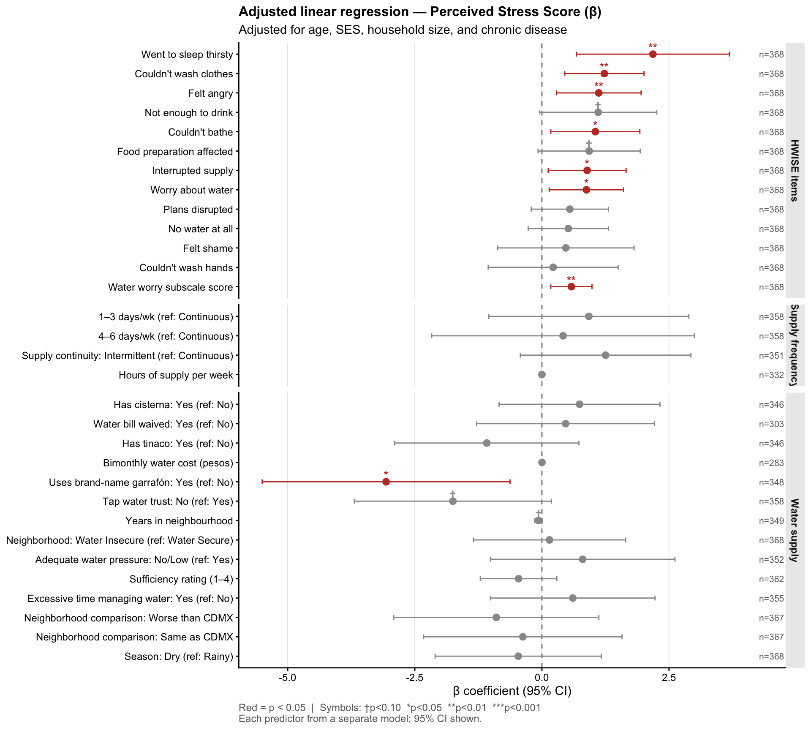
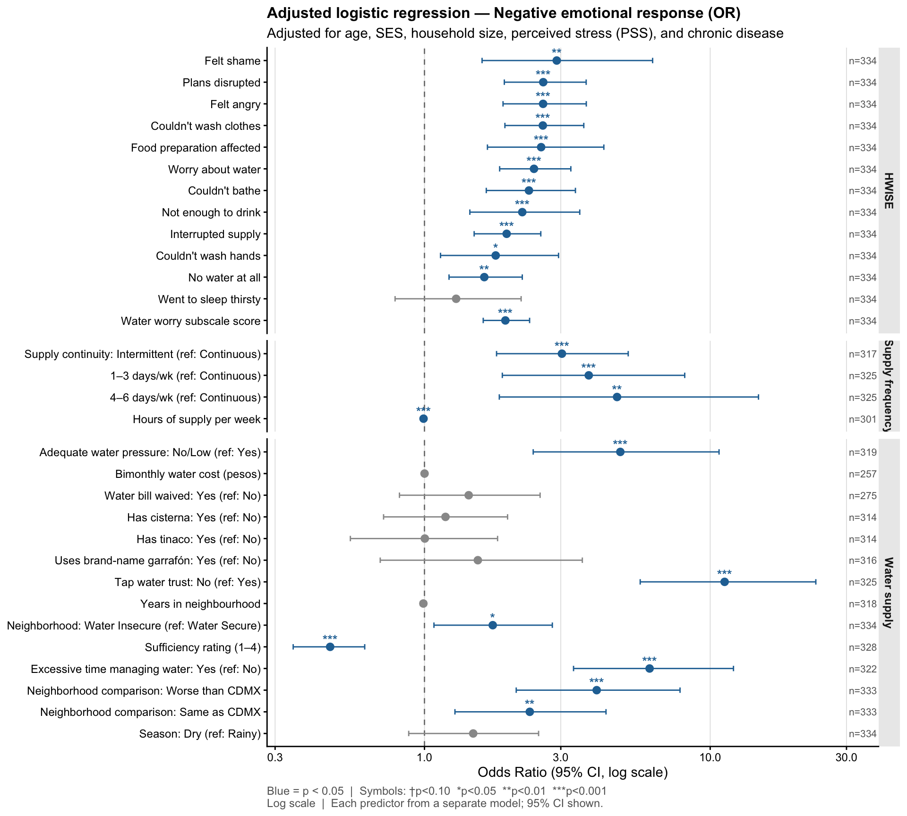

Last updated: 2026-03-29
Checks: 6 1
Knit directory: QUAIL-Mex/
This reproducible R Markdown analysis was created with workflowr (version 1.7.1). The Checks tab describes the reproducibility checks that were applied when the results were created. The Past versions tab lists the development history.
The R Markdown file has unstaged changes. To know which version of
the R Markdown file created these results, you’ll want to first commit
it to the Git repo. If you’re still working on the analysis, you can
ignore this warning. When you’re finished, you can run
wflow_publish to commit the R Markdown file and build the
HTML.
Great job! The global environment was empty. Objects defined in the global environment can affect the analysis in your R Markdown file in unknown ways. For reproduciblity it’s best to always run the code in an empty environment.
The command set.seed(20241009) was run prior to running
the code in the R Markdown file. Setting a seed ensures that any results
that rely on randomness, e.g. subsampling or permutations, are
reproducible.
Great job! Recording the operating system, R version, and package versions is critical for reproducibility.
Nice! There were no cached chunks for this analysis, so you can be confident that you successfully produced the results during this run.
Great job! Using relative paths to the files within your workflowr project makes it easier to run your code on other machines.
Great! You are using Git for version control. Tracking code development and connecting the code version to the results is critical for reproducibility.
The results in this page were generated with repository version ce0e054. See the Past versions tab to see a history of the changes made to the R Markdown and HTML files.
Note that you need to be careful to ensure that all relevant files for
the analysis have been committed to Git prior to generating the results
(you can use wflow_publish or
wflow_git_commit). workflowr only checks the R Markdown
file, but you know if there are other scripts or data files that it
depends on. Below is the status of the Git repository when the results
were generated:
Ignored files:
Ignored: .DS_Store
Ignored: .RData
Ignored: .Rhistory
Ignored: .Rproj.user/
Ignored: .claude/settings.local.json
Ignored: .claude/worktrees/
Ignored: analysis/.DS_Store
Ignored: analysis/.RData
Ignored: analysis/.Rhistory
Ignored: analysis/Hrs_by_HWISE score.png
Ignored: analysis/stacked_barplot.png
Ignored: code/.DS_Store
Ignored: data/.DS_Store
Ignored: figure/.DS_Store
Ignored: output/.DS_Store
Ignored: output/figures/.DS_Store
Ignored: output/tables/.DS_Store
Untracked files:
Untracked: output/figures/06z.Unadj_OR_EMO_sparklines.png
Untracked: output/tables/~$.Tables_Aim2_Models.docx
Unstaged changes:
Modified: analysis/06.unadjusted_models.Rmd
Modified: analysis/06z.forest_sparklines_proto.Rmd
Modified: analysis/07.aim1_models.Rmd
Modified: analysis/08.aim2_models.Rmd
Modified: analysis/09.aim2_adjusted_for_hwise.Rmd
Modified: output/figures/06.Unadj_coef_EMO.png
Modified: output/figures/06.Unadj_coef_PSS.png
Modified: output/figures/06z.Unadj_coef_PSS_sparklines.png
Deleted: output/figures/07.UV_coef_EMO.png
Deleted: output/figures/07.UV_coef_PSS.png
Modified: output/figures/08.aim2_emo_forest.png
Modified: output/figures/08.aim2_pss_forest.png
Modified: output/figures/09.aim2_adjusted_for_hwise_emo_forest.png
Modified: output/figures/09.aim2_adjusted_for_hwise_pss_forest.png
Modified: output/tables/06.Tables_Unadjusted_Models.docx
Modified: output/tables/07.Tables_Aim1_Models.docx
Modified: output/tables/07.aim1_models_core_wide.docx
Modified: output/tables/08.Tables_Aim2_Models.docx
Modified: output/tables/09.Tables_Aim2_HWISEadj_Models.docx
Modified: output/tables/10.Tables_Full_Models.docx
Note that any generated files, e.g. HTML, png, CSS, etc., are not included in this status report because it is ok for generated content to have uncommitted changes.
These are the previous versions of the repository in which changes were
made to the R Markdown (analysis/08.aim2_models.Rmd) and
HTML (docs/08.aim2_models.html) files. If you’ve configured
a remote Git repository (see ?wflow_git_remote), click on
the hyperlinks in the table below to view the files as they were in that
past version.
| File | Version | Author | Date | Message |
|---|---|---|---|---|
| Rmd | ce0e054 | Paloma | 2026-03-27 | homogenize formatting tables |
| html | ce0e054 | Paloma | 2026-03-27 | homogenize formatting tables |
| Rmd | aa3216c | Paloma | 2026-03-26 | updated forest plots, updated intros |
| html | aa3216c | Paloma | 2026-03-26 | updated forest plots, updated intros |
| Rmd | 3ad7716 | Paloma | 2026-03-23 | updated |
| html | 3ad7716 | Paloma | 2026-03-23 | updated |
This script fits the Aim 2 regression models testing water insecurity components as predictors of two outcomes:
PSS_TOTAL) — linear regressionEMO_NEG) — logistic regressionHWISE individual items and the water worry subscale are included alongside other water supply predictors in a single merged forest plot per outcome. Other HWISE composite/subscale scores are excluded.
| Role | Variables |
|---|---|
| PSS outcome | PSS_TOTAL (continuous, 0–56) |
| EMO outcome | EMO_NEG — 0 = positive, 1 = negative (Q26) |
| Core covariates (PSS) | Age (D_AGE), SES composite (SES_SC_Total),
Household size (D_HH_SIZE), Chronic disease
(Chronic_dis) |
| Core covariates (EMO) | As above + PSS_TOTAL |
| Augmenting (one per model) | HWISE individual items · Water worry subscale
(HW_WORRY_SUB) · Hours of water supply/week · Intermittent
supply · Season · Neighborhood comparison · Excessive time handling
water · Sufficiency rating · Water pressure · Supply frequency ·
Neighborhood (WS/WI) · Years in neighbourhood
(D_LOC_TIME) |
Multiple testing: All p-values are adjusted using the Benjamini-Hochberg (BH) procedure, applied across all Aim 2 models within each outcome.
MISSING_CODES <- c(999, 888, 777, 666, 555, 444, 333)
clean_num <- function(x) {
x_num <- suppressWarnings(as.numeric(as.character(x)))
ifelse(x_num %in% MISSING_CODES, NA_real_, x_num)
}
df_raw <- read_csv("./data/03.Merged_Q1-6_Q16_Q19_Q26_Q28.csv",
show_col_types = FALSE)
cat("Dataset:", nrow(df_raw), "rows ×", ncol(df_raw), "cols\n")Dataset: 397 rows × 151 cols# ── Check new column availability ─────────────────────────────────────────────
new_cols <- c("HLTH_CDIS_CAT", "HW_TOTAL", "HW_WORRY_SUB", "HW_MEX_5SUB",
"MX6_WPRESS", "MX4_WFREQ", "MX4_W_FREQ", "W_WS_LOC",
"D_LOC_TIME_CLEAN")
cat("\nNew column availability:\n")
New column availability:for (col in new_cols) {
cat(sprintf(" %-20s %s\n", col,
ifelse(col %in% names(df_raw), "FOUND", "*** MISSING ***")))
} HLTH_CDIS_CAT FOUND
HW_TOTAL FOUND
HW_WORRY_SUB FOUND
HW_MEX_5SUB FOUND
MX6_WPRESS FOUND
MX4_WFREQ FOUND
MX4_W_FREQ FOUND
W_WS_LOC FOUND
D_LOC_TIME_CLEAN FOUNDhwise_items <- c("HW_WORRY", "HW_INTERR", "HW_CLOTHES", "HW_PLANS",
"HW_FOOD", "HW_HANDS", "HW_BODY", "HW_DRINK",
"HW_ANGRY", "HW_SLEEP", "HW_NONE", "HW_SHAME")
df <- df_raw %>%
mutate(
# ── Outcomes ───────────────────────────────────────────────────────────────
PSS_TOTAL = clean_num(PSS_TOTAL),
EMO_NEG = {
raw <- clean_num(MX26_EM_HHW_CAT)
case_when(
raw == 0 ~ 0L,
raw == 1 ~ 1L,
TRUE ~ NA_integer_
)
},
# ── Core covariates ────────────────────────────────────────────────────────
D_AGE = clean_num(D_AGE),
SES_SC_Total = clean_num(SES_SC_Total),
D_HH_SIZE = clean_num(D_HH_SIZE),
D_LOC_TIME = clean_num(D_LOC_TIME_CLEAN),
# ── HWISE individual items ──────────────────────────────────────────────────
across(all_of(hwise_items), clean_num),
# ── Water worry subscale ───────────────────────────────────────────────────
Water_worry = clean_num(HW_WORRY_SUB),
# ── Hours of water supply per week ─────────────────────────────────────────
HRS_PER_WEEK = clean_num(MX5_WFREQ_HRS_PER_WEEK),
# ── Continuous vs. intermittent supply ─────────────────────────────────────
# 0 = Continuous (reference), 1 = Intermittent
CONT_INT = {
raw <- as.character(MX3_CONT_INT)
raw_num <- suppressWarnings(as.numeric(raw))
factor(case_when(
raw_num %in% MISSING_CODES ~ NA_character_,
raw_num == 0 ~ "Continuous",
raw_num == 1 ~ "Intermittent",
str_detect(str_to_lower(raw), "contin") ~ "Continuous",
str_detect(str_to_lower(raw), "inter") ~ "Intermittent",
is.na(raw) | str_trim(raw) == "" | raw == "NA" ~ NA_character_,
TRUE ~ raw
), levels = c("Continuous", "Intermittent"))
},
# ── Season ─────────────────────────────────────────────────────────────────
# 0 = Season 1 (rainy, reference), 1 = Season 2 (dry)
SEASON = factor(SEASON, levels = c(0, 1), labels = c("Rainy", "Dry")),
# ── Neighborhood water comparison ──────────────────────────────────────────
# 0 = Better (reference), 1 = Same, 2 = Worse
NB_COMP = factor(
case_when(
clean_num(MX28_WQ_COMP_CAT) == 0 ~ "Better",
clean_num(MX28_WQ_COMP_CAT) == 1 ~ "Same",
clean_num(MX28_WQ_COMP_CAT) == 2 ~ "Worse",
TRUE ~ NA_character_
),
levels = c("Better", "Same", "Worse")
),
# ── Excessive time handling water ──────────────────────────────────────────
# 0 = No (reference), 1 = Yes
TIME_WATER = factor(
case_when(
clean_num(MX19_TIME_CAT) == 0 ~ "No",
clean_num(MX19_TIME_CAT) == 1 ~ "Yes",
TRUE ~ NA_character_
),
levels = c("No", "Yes")
),
# ── Sufficiency rating ─────────────────────────────────────────────────────
# 1 = not sufficient, 4 = completely sufficient
SUFF_RATING = clean_num(MX16_SCEN_99),
# ── Chronic disease ────────────────────────────────────────────────────────
# 0 = No (reference), 1 = Yes
Chronic_dis = factor(
case_when(
clean_num(HLTH_CDIS_CAT) == 0 ~ "No",
clean_num(HLTH_CDIS_CAT) == 1 ~ "Yes",
TRUE ~ NA_character_
),
levels = c("No", "Yes")
),
# ── Water pressure ─────────────────────────────────────────────────────────
W_Pressure = factor(
case_when(
str_detect(str_to_lower(as.character(MX6_WPRESS)),
"s[i\u00ed]|yes|buena|bien") ~ "Yes",
str_detect(str_to_lower(as.character(MX6_WPRESS)),
"^no|baja|poca") ~ "No/Low",
TRUE ~ NA_character_
),
levels = c("Yes", "No/Low")
),
# ── Supply frequency ───────────────────────────────────────────────────────
W_Frequency = {
freq_raw <- if ("MX4_W_FREQ" %in% names(df_raw)) {
dplyr::coalesce(as.character(MX4_WFREQ), as.character(MX4_W_FREQ))
} else {
as.character(MX4_WFREQ)
}
raw <- str_to_lower(as.character(freq_raw))
factor(
case_when(
str_detect(raw, "^contin") ~ "Continuous",
str_detect(raw, "^diari|every day") ~ "Daily",
str_detect(raw, "4 a 6|4-6") ~ "4\u20136 days/week",
str_detect(raw, "1 a 3|1-3") ~ "1\u20133 days/week",
str_detect(raw, "^intermi") ~ "Intermittent",
TRUE ~ NA_character_
),
levels = c("Continuous", "Daily", "4\u20136 days/week",
"1\u20133 days/week", "Intermittent")
)
},
# ── Neighborhood water security ────────────────────────────────────────────
W_WS_LOC_F = if ("W_WS_LOC" %in% names(df_raw)) {
factor(W_WS_LOC, levels = c("WS", "WI"),
labels = c("Water Secure", "Water Insecure"))
} else {
factor(NA_character_, levels = c("Water Secure", "Water Insecure"))
},
# ── Water infrastructure & cost (Q8, Q9, Q10, Q11) ────────────────────────
W_Trust = if ("MX8_TRUST_CAT" %in% names(df_raw)) {
factor(case_when(
clean_num(MX8_TRUST_CAT) == 1 ~ "Yes",
clean_num(MX8_TRUST_CAT) == 0 ~ "No",
TRUE ~ NA_character_
), levels = c("Yes", "No"))
} else factor(NA_character_, levels = c("Yes", "No")),
W_Garrafon_brand = if ("MX9_GARRAFON_BRAND" %in% names(df_raw)) {
factor(case_when(
clean_num(MX9_GARRAFON_BRAND) == 1 ~ "Yes",
clean_num(MX9_GARRAFON_BRAND) == 0 ~ "No",
TRUE ~ NA_character_
), levels = c("No", "Yes"))
} else factor(NA_character_, levels = c("No", "Yes")),
W_Has_tinaco = if ("MX10_HAS_TINACO" %in% names(df_raw)) {
factor(case_when(
clean_num(MX10_HAS_TINACO) == 1 ~ "Yes",
clean_num(MX10_HAS_TINACO) == 0 ~ "No",
TRUE ~ NA_character_
), levels = c("No", "Yes"))
} else factor(NA_character_, levels = c("No", "Yes")),
W_Has_cisterna = if ("MX10_HAS_CISTERNA" %in% names(df_raw)) {
factor(case_when(
clean_num(MX10_HAS_CISTERNA) == 1 ~ "Yes",
clean_num(MX10_HAS_CISTERNA) == 0 ~ "No",
TRUE ~ NA_character_
), levels = c("No", "Yes"))
} else factor(NA_character_, levels = c("No", "Yes")),
W_Bill_waived = if ("MX11_BILL_WAIVED" %in% names(df_raw)) {
factor(case_when(
clean_num(MX11_BILL_WAIVED) == 1 ~ "Yes",
clean_num(MX11_BILL_WAIVED) == 0 ~ "No",
TRUE ~ NA_character_
), levels = c("No", "Yes"))
} else factor(NA_character_, levels = c("No", "Yes")),
W_Cost_2mnths = if ("MX11_COST_2MNTHS" %in% names(df_raw)) {
suppressWarnings(as.numeric(as.character(MX11_COST_2MNTHS)))
} else NA_real_
)analytic_vars <- c("PSS_TOTAL", "EMO_NEG", "D_AGE", "SES_SC_Total", "D_HH_SIZE",
"SEASON", "Chronic_dis",
hwise_items, "Water_worry", "HRS_PER_WEEK", "CONT_INT",
"NB_COMP", "TIME_WATER", "SUFF_RATING",
"W_Pressure", "W_Frequency", "W_WS_LOC_F", "D_LOC_TIME",
"W_Trust", "W_Garrafon_brand", "W_Has_tinaco", "W_Has_cisterna",
"W_Bill_waived", "W_Cost_2mnths")
df %>%
summarise(across(all_of(analytic_vars), ~ sum(is.na(.)))) %>%
pivot_longer(everything(), names_to = "variable", values_to = "n_missing") %>%
mutate(pct_missing = round(100 * n_missing / nrow(df), 1)) %>%
arrange(desc(n_missing)) %>%
print(n = Inf)# A tibble: 35 × 3
variable n_missing pct_missing
<chr> <int> <dbl>
1 W_Cost_2mnths 90 22.7
2 W_Bill_waived 69 17.4
3 HRS_PER_WEEK 38 9.6
4 EMO_NEG 34 8.6
5 D_LOC_TIME 33 8.3
6 W_Has_tinaco 22 5.5
7 W_Has_cisterna 22 5.5
8 D_HH_SIZE 21 5.3
9 CONT_INT 20 5
10 W_Garrafon_brand 20 5
11 W_Pressure 16 4
12 TIME_WATER 13 3.3
13 W_Frequency 10 2.5
14 W_Trust 10 2.5
15 SES_SC_Total 6 1.5
16 SUFF_RATING 6 1.5
17 NB_COMP 3 0.8
18 D_AGE 2 0.5
19 PSS_TOTAL 1 0.3
20 SEASON 0 0
21 Chronic_dis 0 0
22 HW_WORRY 0 0
23 HW_INTERR 0 0
24 HW_CLOTHES 0 0
25 HW_PLANS 0 0
26 HW_FOOD 0 0
27 HW_HANDS 0 0
28 HW_BODY 0 0
29 HW_DRINK 0 0
30 HW_ANGRY 0 0
31 HW_SLEEP 0 0
32 HW_NONE 0 0
33 HW_SHAME 0 0
34 Water_worry 0 0
35 W_WS_LOC_F 0 0 cat("PSS_TOTAL summary:\n")PSS_TOTAL summary:print(summary(df$PSS_TOTAL)) Min. 1st Qu. Median Mean 3rd Qu. Max. NA's
9.00 22.00 28.00 27.24 32.00 47.00 1 cat("\nEMO_NEG distribution:\n")
EMO_NEG distribution:print(table(df$EMO_NEG, useNA = "always"))
0 1 <NA>
125 238 34 cat("\nProportion negative (valid responses):",
round(mean(df$EMO_NEG == 1, na.rm = TRUE), 3), "\n")
Proportion negative (valid responses): 0.656 core_pss <- PSS_TOTAL ~ D_AGE + SES_SC_Total + D_HH_SIZE + Chronic_dis
# ── m_a5: Individual HWISE item models (one per item) ─────────────────────────
hwise_specs_pss <- setNames(
lapply(hwise_items, function(item) {
list(
label = paste0("m_a5 \u2013 ", item),
group = "m_a5: HWISE items",
formula = as.formula(
paste("PSS_TOTAL ~ D_AGE + SES_SC_Total + D_HH_SIZE + Chronic_dis +", item)
)
)
}),
paste0("m_a5_", tolower(hwise_items))
)
model_specs_pss <- c(
hwise_specs_pss,
list(
m_a12 = list(
label = "m_a12: Water worry subscale",
group = "m_a12: Water worry",
formula = PSS_TOTAL ~ D_AGE + SES_SC_Total + D_HH_SIZE + Chronic_dis + Water_worry
),
m_a6 = list(
label = "m_a6: Hours of water supply/week",
group = "m_a6: Hours supply",
formula = PSS_TOTAL ~ D_AGE + SES_SC_Total + D_HH_SIZE + Chronic_dis + HRS_PER_WEEK
),
m_a7 = list(
label = "m_a7: Intermittent supply",
group = "m_a7: Intermittent",
formula = PSS_TOTAL ~ D_AGE + SES_SC_Total + D_HH_SIZE + Chronic_dis + CONT_INT
),
m_a8 = list(
label = "m_a8: Season (dry vs. rainy)",
group = "m_a8: Season",
formula = PSS_TOTAL ~ D_AGE + SES_SC_Total + D_HH_SIZE + Chronic_dis + SEASON
),
m_a9 = list(
label = "m_a9: Neighborhood comparison",
group = "m_a9: Neighborhood comparison",
formula = PSS_TOTAL ~ D_AGE + SES_SC_Total + D_HH_SIZE + Chronic_dis + NB_COMP
),
m_a10 = list(
label = "m_a10: Excessive time handling water",
group = "m_a10: Time burden",
formula = PSS_TOTAL ~ D_AGE + SES_SC_Total + D_HH_SIZE + Chronic_dis + TIME_WATER
),
m_a11 = list(
label = "m_a11: Sufficiency rating",
group = "m_a11: Sufficiency",
formula = PSS_TOTAL ~ D_AGE + SES_SC_Total + D_HH_SIZE + Chronic_dis + SUFF_RATING
),
m_a16 = list(
label = "m_a16: Water pressure",
group = "m_a16: Water pressure",
formula = PSS_TOTAL ~ D_AGE + SES_SC_Total + D_HH_SIZE + Chronic_dis + W_Pressure
),
m_a17 = list(
label = "m_a17: Supply frequency",
group = "m_a17: Supply frequency",
formula = PSS_TOTAL ~ D_AGE + SES_SC_Total + D_HH_SIZE + Chronic_dis + W_Frequency
),
m_a18 = list(
label = "m_a18: Neighborhood (WS/WI)",
group = "m_a18: Neighborhood",
formula = PSS_TOTAL ~ D_AGE + SES_SC_Total + D_HH_SIZE + Chronic_dis + W_WS_LOC_F
),
m_a_loc = list(
label = "m_a_loc: Years in neighbourhood",
group = "m_a_loc: Years in neighbourhood",
formula = PSS_TOTAL ~ D_AGE + SES_SC_Total + D_HH_SIZE + Chronic_dis + D_LOC_TIME
),
m_a19 = list(
label = "m_a19: Tap water trust",
group = "m_a19: Water infrastructure",
formula = PSS_TOTAL ~ D_AGE + SES_SC_Total + D_HH_SIZE + Chronic_dis + W_Trust
),
m_a20 = list(
label = "m_a20: Brand-name garrafón use",
group = "m_a20: Water infrastructure",
formula = PSS_TOTAL ~ D_AGE + SES_SC_Total + D_HH_SIZE + Chronic_dis + W_Garrafon_brand
),
m_a21 = list(
label = "m_a21: Has tinaco",
group = "m_a21: Water infrastructure",
formula = PSS_TOTAL ~ D_AGE + SES_SC_Total + D_HH_SIZE + Chronic_dis + W_Has_tinaco
),
m_a22 = list(
label = "m_a22: Has cisterna",
group = "m_a22: Water infrastructure",
formula = PSS_TOTAL ~ D_AGE + SES_SC_Total + D_HH_SIZE + Chronic_dis + W_Has_cisterna
),
m_a23 = list(
label = "m_a23: Water bill waived",
group = "m_a23: Water infrastructure",
formula = PSS_TOTAL ~ D_AGE + SES_SC_Total + D_HH_SIZE + Chronic_dis + W_Bill_waived
),
m_a24 = list(
label = "m_a24: Bimonthly water cost",
group = "m_a24: Water infrastructure",
formula = PSS_TOTAL ~ D_AGE + SES_SC_Total + D_HH_SIZE + Chronic_dis + W_Cost_2mnths
)
)
)
cat("Total PSS models registered:", length(model_specs_pss), "\n")Total PSS models registered: 29 cat("Model IDs:\n")Model IDs:cat(paste(" -", names(model_specs_pss)), sep = "\n") - m_a5_hw_worry
- m_a5_hw_interr
- m_a5_hw_clothes
- m_a5_hw_plans
- m_a5_hw_food
- m_a5_hw_hands
- m_a5_hw_body
- m_a5_hw_drink
- m_a5_hw_angry
- m_a5_hw_sleep
- m_a5_hw_none
- m_a5_hw_shame
- m_a12
- m_a6
- m_a7
- m_a8
- m_a9
- m_a10
- m_a11
- m_a16
- m_a17
- m_a18
- m_a_loc
- m_a19
- m_a20
- m_a21
- m_a22
- m_a23
- m_a24fitted_pss <- lapply(model_specs_pss, function(spec) {
lm(spec$formula, data = df, na.action = na.omit)
})
tibble(
model_id = names(model_specs_pss),
label = map_chr(model_specs_pss, "label"),
n = map_int(fitted_pss, nobs)
) %>% print(n = Inf)# A tibble: 29 × 3
model_id label n
<chr> <chr> <int>
1 m_a5_hw_worry m_a5 – HW_WORRY 368
2 m_a5_hw_interr m_a5 – HW_INTERR 368
3 m_a5_hw_clothes m_a5 – HW_CLOTHES 368
4 m_a5_hw_plans m_a5 – HW_PLANS 368
5 m_a5_hw_food m_a5 – HW_FOOD 368
6 m_a5_hw_hands m_a5 – HW_HANDS 368
7 m_a5_hw_body m_a5 – HW_BODY 368
8 m_a5_hw_drink m_a5 – HW_DRINK 368
9 m_a5_hw_angry m_a5 – HW_ANGRY 368
10 m_a5_hw_sleep m_a5 – HW_SLEEP 368
11 m_a5_hw_none m_a5 – HW_NONE 368
12 m_a5_hw_shame m_a5 – HW_SHAME 368
13 m_a12 m_a12: Water worry subscale 368
14 m_a6 m_a6: Hours of water supply/week 332
15 m_a7 m_a7: Intermittent supply 351
16 m_a8 m_a8: Season (dry vs. rainy) 368
17 m_a9 m_a9: Neighborhood comparison 367
18 m_a10 m_a10: Excessive time handling water 355
19 m_a11 m_a11: Sufficiency rating 362
20 m_a16 m_a16: Water pressure 352
21 m_a17 m_a17: Supply frequency 358
22 m_a18 m_a18: Neighborhood (WS/WI) 368
23 m_a_loc m_a_loc: Years in neighbourhood 349
24 m_a19 m_a19: Tap water trust 358
25 m_a20 m_a20: Brand-name garrafón use 348
26 m_a21 m_a21: Has tinaco 346
27 m_a22 m_a22: Has cisterna 346
28 m_a23 m_a23: Water bill waived 303
29 m_a24 m_a24: Bimonthly water cost 283core_terms_pss <- c("(Intercept)", "D_AGE", "SES_SC_Total", "D_HH_SIZE", "Chronic_disYes")
summary_raw_pss <- map_dfr(names(fitted_pss), function(nm) {
mod <- fitted_pss[[nm]]
spec <- model_specs_pss[[nm]]
fit <- glance(mod)
rows_used <- as.integer(rownames(model.frame(mod)))
m0_sub <- lm(core_pss, data = df[rows_used, ])
lrt_tab <- anova(m0_sub, mod)
f_stat <- lrt_tab$F[2]
f_df1 <- lrt_tab$Df[2]
f_df2 <- lrt_tab$Res.Df[2]
f_p <- lrt_tab$`Pr(>F)`[2]
focal_coefs <- tidy(mod, conf.int = TRUE) %>%
filter(!term %in% core_terms_pss)
if (nrow(focal_coefs) == 0) return(NULL)
focal_coefs %>%
mutate(
model_id = nm,
label = spec$label,
group = spec$group,
n = nobs(mod),
adj_R2 = round(fit$adj.r.squared, 3),
delta_adj_R2 = round(fit$adj.r.squared - glance(m0_sub)$adj.r.squared, 3),
AIC = round(fit$AIC, 1),
F_stat = round(f_stat, 2),
F_df1 = as.integer(f_df1),
F_df2 = as.integer(f_df2),
F_p = round(f_p, 4)
)
})
summary_pss <- summary_raw_pss %>%
mutate(
beta_ci = sprintf("%.2f [%.2f, %.2f]", estimate, conf.low, conf.high),
p_coef = case_when(
is.na(p.value) ~ "\u2014",
p.value < 0.001 ~ "<0.001",
TRUE ~ sprintf("%.3f", p.value)
),
p_F_fmt = case_when(
is.na(F_p) ~ "\u2014",
F_p < 0.001 ~ "<0.001",
TRUE ~ sprintf("%.3f", F_p)
),
p_adj_fmt = p_F_fmt
)
tbl_sum_pss <- summary_pss %>%
arrange(AIC) %>%
mutate(
p_coef_s = sig_fmt(p.value, p_coef),
p_F_s = sig_fmt(F_p, p_F_fmt),
p_adj_s = sig_fmt(F_p, p_adj_fmt)
)
b_pc_s <- which(!is.na(tbl_sum_pss$p.value) & tbl_sum_pss$p.value < 0.05)
b_pF_s <- which(!is.na(tbl_sum_pss$F_p) & tbl_sum_pss$F_p < 0.05)
b_pa_s <- which(!is.na(tbl_sum_pss$F_p) & tbl_sum_pss$F_p < 0.05)
tbl_sum_pss %>%
select(label, term, n, adj_R2, delta_adj_R2, AIC, beta_ci,
p_coef_s, F_stat, p_F_s, p_adj_s) %>%
flextable() %>%
set_header_labels(
label = "Model",
term = "Predictor term",
n = "N",
adj_R2 = "Adj. R\u00b2",
delta_adj_R2 = "\u0394 Adj. R\u00b2",
AIC = "AIC",
beta_ci = "\u03b2 [95% CI]",
p_coef_s = "p (coef.)",
F_stat = "F",
p_F_s = "p (F-test)",
p_adj_s = "p (F-test) "
) %>%
bold(i = b_pc_s, j = "p_coef_s") %>%
bold(i = b_pF_s, j = "p_F_s") %>%
bold(i = b_pa_s, j = "p_adj_s") %>%
set_table_properties(layout = "autofit", width = 1)Model | Predictor term | N | Adj. R² | Δ Adj. R² | AIC | β [95% CI] | p (coef.) | F | p (F-test) | p (F-test) |
|---|---|---|---|---|---|---|---|---|---|---|
m_a24: Bimonthly water cost | W_Cost_2mnths | 283 | 0.018 | -0.001 | 1,931.9 | 0.00 [-0.00, 0.00] | 0.404 | 0.70 | 0.404 | 0.404 |
m_a23: Water bill waived | W_Bill_waivedYes | 303 | 0.020 | -0.002 | 2,064.0 | 0.47 [-1.28, 2.22] | 0.600 | 0.28 | 0.600 | 0.600 |
m_a6: Hours of water supply/week | HRS_PER_WEEK | 332 | 0.025 | -0.003 | 2,267.8 | -0.00 [-0.01, 0.01] | 0.926 | 0.01 | 0.926 | 0.926 |
m_a21: Has tinaco | W_Has_tinacoYes | 346 | 0.016 | 0.001 | 2,360.5 | -1.08 [-2.90, 0.73] | 0.240 | 1.39 | 0.240 | 0.240 |
m_a22: Has cisterna | W_Has_cisternaYes | 346 | 0.015 | 0.000 | 2,361.0 | 0.74 [-0.84, 2.32] | 0.358 | 0.85 | 0.358 | 0.358 |
m_a20: Brand-name garrafón use | W_Garrafon_brandYes | 348 | 0.031 | 0.014 | 2,367.9 | -3.07 [-5.50, -0.63] | 0.014 * | 6.12 | 0.014 * | 0.014 * |
m_a_loc: Years in neighbourhood | D_LOC_TIME | 349 | 0.035 | 0.006 | 2,379.1 | -0.07 [-0.14, 0.01] | 0.078 † | 3.12 | 0.078 † | 0.078 † |
m_a7: Intermittent supply | CONT_INTIntermittent | 351 | 0.023 | 0.003 | 2,396.7 | 1.25 [-0.42, 2.93] | 0.143 | 2.16 | 0.143 | 0.143 |
m_a16: Water pressure | W_PressureNo/Low | 352 | 0.026 | -0.001 | 2,400.1 | 0.80 [-1.02, 2.62] | 0.386 | 0.75 | 0.386 | 0.386 |
m_a10: Excessive time handling water | TIME_WATERYes | 355 | 0.031 | -0.001 | 2,424.4 | 0.61 [-1.01, 2.22] | 0.461 | 0.54 | 0.462 | 0.462 |
m_a19: Tap water trust | W_TrustNo | 358 | 0.031 | 0.006 | 2,436.1 | -1.75 [-3.69, 0.19] | 0.077 † | 3.15 | 0.077 † | 0.077 † |
m_a17: Supply frequency | W_Frequency4–6 days/week | 358 | 0.024 | -0.003 | 2,442.9 | 0.42 [-2.17, 3.00] | 0.752 | 0.44 | 0.645 | 0.645 |
m_a17: Supply frequency | W_Frequency1–3 days/week | 358 | 0.024 | -0.003 | 2,442.9 | 0.92 [-1.05, 2.89] | 0.357 | 0.44 | 0.645 | 0.645 |
m_a11: Sufficiency rating | SUFF_RATING | 362 | 0.028 | 0.001 | 2,460.5 | -0.46 [-1.21, 0.29] | 0.232 | 1.43 | 0.232 | 0.232 |
m_a5 – HW_CLOTHES | HW_CLOTHES | 368 | 0.049 | 0.022 | 2,501.6 | 1.23 [0.45, 2.01] | 0.002 ** | 9.58 | 0.002 ** | 0.002 ** |
m_a5 – HW_SLEEP | HW_SLEEP | 368 | 0.046 | 0.019 | 2,503.0 | 2.18 [0.68, 3.69] | 0.005 ** | 8.13 | 0.005 ** | 0.005 ** |
m_a12: Water worry subscale | Water_worry | 368 | 0.045 | 0.018 | 2,503.3 | 0.58 [0.17, 0.99] | 0.005 ** | 7.91 | 0.005 ** | 0.005 ** |
m_a5 – HW_ANGRY | HW_ANGRY | 368 | 0.043 | 0.016 | 2,504.2 | 1.12 [0.28, 1.95] | 0.009 ** | 6.96 | 0.009 ** | 0.009 ** |
m_a5 – HW_WORRY | HW_WORRY | 368 | 0.039 | 0.012 | 2,505.6 | 0.88 [0.14, 1.61] | 0.019 * | 5.53 | 0.019 * | 0.019 * |
m_a5 – HW_BODY | HW_BODY | 368 | 0.039 | 0.012 | 2,505.6 | 1.05 [0.17, 1.93] | 0.019 * | 5.56 | 0.019 * | 0.019 * |
m_a5 – HW_INTERR | HW_INTERR | 368 | 0.038 | 0.011 | 2,506.0 | 0.89 [0.12, 1.66] | 0.023 * | 5.21 | 0.023 * | 0.023 * |
m_a9: Neighborhood comparison | NB_COMPSame | 367 | 0.023 | -0.003 | 2,506.0 | -0.38 [-2.33, 1.58] | 0.705 | 0.40 | 0.668 | 0.668 |
m_a9: Neighborhood comparison | NB_COMPWorse | 367 | 0.023 | -0.003 | 2,506.0 | -0.90 [-2.91, 1.12] | 0.382 | 0.40 | 0.668 | 0.668 |
m_a5 – HW_DRINK | HW_DRINK | 368 | 0.034 | 0.007 | 2,507.6 | 1.11 [-0.04, 2.26] | 0.060 † | 3.57 | 0.060 † | 0.060 † |
m_a5 – HW_FOOD | HW_FOOD | 368 | 0.033 | 0.006 | 2,507.9 | 0.93 [-0.08, 1.93] | 0.070 † | 3.30 | 0.070 † | 0.070 † |
m_a5 – HW_PLANS | HW_PLANS | 368 | 0.030 | 0.003 | 2,509.2 | 0.55 [-0.21, 1.31] | 0.156 | 2.02 | 0.157 | 0.157 |
m_a5 – HW_NONE | HW_NONE | 368 | 0.029 | 0.002 | 2,509.5 | 0.52 [-0.27, 1.31] | 0.197 | 1.67 | 0.197 | 0.197 |
m_a5 – HW_SHAME | HW_SHAME | 368 | 0.025 | -0.001 | 2,510.7 | 0.47 [-0.87, 1.81] | 0.490 | 0.48 | 0.490 | 0.490 |
m_a8: Season (dry vs. rainy) | SEASONDry | 368 | 0.025 | -0.002 | 2,510.9 | -0.47 [-2.10, 1.17] | 0.576 | 0.31 | 0.576 | 0.576 |
m_a5 – HW_HANDS | HW_HANDS | 368 | 0.024 | -0.002 | 2,511.1 | 0.22 [-1.06, 1.50] | 0.734 | 0.12 | 0.734 | 0.734 |
m_a18: Neighborhood (WS/WI) | W_WS_LOC_FWater Insecure | 368 | 0.024 | -0.003 | 2,511.2 | 0.15 [-1.35, 1.65] | 0.845 | 0.04 | 0.845 | 0.845 |
readable_terms_pss <- c(
Water_worry = "Water worry subscale score",
HRS_PER_WEEK = "Hours of supply / week",
CONT_INTIntermittent = "Intermittent vs. continuous supply",
SEASONDry = "Dry vs. rainy season",
NB_COMPSame = "Neighborhood: same as CDMX",
NB_COMPWorse = "Neighborhood: worse than CDMX",
TIME_WATERYes = "Excessive time managing water",
SUFF_RATING = "Sufficiency rating (1\u20134)",
`W_PressureNo/Low` = "Water pressure: No/Low",
W_FrequencyDaily = "Daily",
`W_Frequency4–6 days/week` = "4\u20136 days/wk",
`W_Frequency1–3 days/week` = "1\u20133 days/wk",
W_FrequencyIntermittent = "Intermittent",
`W_WS_LOC_FWater Insecure` = "Neighborhood: Water Insecure",
D_LOC_TIME = "Years in neighbourhood",
W_TrustNo = "Tap water trust: No",
W_Garrafon_brandYes = "Uses brand-name garraf\u00f3n",
W_Has_tinacoYes = "Has tinaco",
W_Has_cisternaYes = "Has cisterna",
W_Bill_waivedYes = "Water bill waived",
W_Cost_2mnths = "Bimonthly water cost (pesos)"
)
# Add HWISE item labels
readable_terms_pss <- c(readable_terms_pss, hwise_readable)
all_ids_pss <- summary_pss %>%
distinct(model_id, AIC) %>%
arrange(AIC) %>%
mutate(rank = row_number())
top5_pss <- summary_pss %>%
left_join(select(all_ids_pss, model_id, rank), by = "model_id") %>%
arrange(rank, estimate) %>%
transmute(
Predictor = coalesce(readable_terms_pss[term], term),
N = n,
beta_ci = beta_ci,
adj_r2 = adj_R2,
delta_r2 = delta_adj_R2,
AIC = AIC,
p_coef = sig_fmt(p.value, p_coef),
p_adj = sig_fmt(F_p, p_adj_fmt),
p_coef_num = p.value,
p_adj_num = F_p
)
b_pc_p <- which(!is.na(top5_pss$p_coef_num) & top5_pss$p_coef_num < 0.05)
b_pa_p <- which(!is.na(top5_pss$p_adj_num) & top5_pss$p_adj_num < 0.05)
ft_pss <- top5_pss %>%
select(-p_coef_num, -p_adj_num) %>%
flextable() %>%
set_header_labels(
Predictor = "Focal predictor",
N = "N",
beta_ci = "\u03b2 [95% CI]",
adj_r2 = "Adj. R\u00b2",
delta_r2 = "\u0394 Adj. R\u00b2",
AIC = "AIC",
p_coef = "p (coef.)",
p_adj = "p (F-test)"
) %>%
bold(i = b_pc_p, j = "p_coef") %>%
bold(i = b_pa_p, j = "p_adj") %>%
merge_v(j = c("N", "adj_r2", "delta_r2", "AIC", "p_adj")) %>%
valign(j = c("N", "adj_r2", "delta_r2", "AIC", "p_adj"),
valign = "top", part = "body") %>%
set_caption(paste0(
"All Aim 2 PSS models ranked by AIC. ",
"\u03b2 = unstandardised regression coefficient; 95% CI = confidence interval. ",
"Adj. R\u00b2 = adjusted R-squared of the full model; ",
"\u0394 Adj. R\u00b2 = change over core-covariate-only model. ",
"All models adjusted for age, SES, household size, and chronic disease. ",
"p (F-test) = F-test p-value for the focal predictor."
)) %>%
pretty_ft_aim2()
ft_pssFocal predictor | N | β [95% CI] | Adj. R² | Δ Adj. R² | AIC | p (coef.) | p (F-test) |
|---|---|---|---|---|---|---|---|
Bimonthly water cost (pesos) | 283 | 0.00 [-0.00, 0.00] | 0.018 | -0.001 | 1,931.9 | 0.404 | 0.404 |
Water bill waived | 303 | 0.47 [-1.28, 2.22] | 0.020 | -0.002 | 2,064.0 | 0.600 | 0.600 |
Hours of supply / week | 332 | -0.00 [-0.01, 0.01] | 0.025 | -0.003 | 2,267.8 | 0.926 | 0.926 |
Has tinaco | 346 | -1.08 [-2.90, 0.73] | 0.016 | 0.001 | 2,360.5 | 0.240 | 0.240 |
Has cisterna | 0.74 [-0.84, 2.32] | 0.015 | 0.000 | 2,361.0 | 0.358 | 0.358 | |
Uses brand-name garrafón | 348 | -3.07 [-5.50, -0.63] | 0.031 | 0.014 | 2,367.9 | 0.014 * | 0.014 * |
Years in neighbourhood | 349 | -0.07 [-0.14, 0.01] | 0.035 | 0.006 | 2,379.1 | 0.078 † | 0.078 † |
Intermittent vs. continuous supply | 351 | 1.25 [-0.42, 2.93] | 0.023 | 0.003 | 2,396.7 | 0.143 | 0.143 |
Water pressure: No/Low | 352 | 0.80 [-1.02, 2.62] | 0.026 | -0.001 | 2,400.1 | 0.386 | 0.386 |
Excessive time managing water | 355 | 0.61 [-1.01, 2.22] | 0.031 | 2,424.4 | 0.461 | 0.462 | |
Tap water trust: No | 358 | -1.75 [-3.69, 0.19] | 0.006 | 2,436.1 | 0.077 † | 0.077 † | |
4–6 days/wk | 0.42 [-2.17, 3.00] | 0.024 | -0.003 | 2,442.9 | 0.752 | 0.645 | |
1–3 days/wk | 0.92 [-1.05, 2.89] | 0.357 | |||||
Sufficiency rating (1–4) | 362 | -0.46 [-1.21, 0.29] | 0.028 | 0.001 | 2,460.5 | 0.232 | 0.232 |
Couldn't wash clothes | 368 | 1.23 [0.45, 2.01] | 0.049 | 0.022 | 2,501.6 | 0.002 ** | 0.002 ** |
Went to sleep thirsty | 2.18 [0.68, 3.69] | 0.046 | 0.019 | 2,503.0 | 0.005 ** | 0.005 ** | |
Water worry subscale score | 0.58 [0.17, 0.99] | 0.045 | 0.018 | 2,503.3 | 0.005 ** | ||
Felt angry | 1.12 [0.28, 1.95] | 0.043 | 0.016 | 2,504.2 | 0.009 ** | 0.009 ** | |
Worry about water | 0.88 [0.14, 1.61] | 0.039 | 0.012 | 2,505.6 | 0.019 * | 0.019 * | |
Couldn't bathe | 1.05 [0.17, 1.93] | 0.019 * | |||||
Interrupted supply | 0.89 [0.12, 1.66] | 0.038 | 0.011 | 2,506.0 | 0.023 * | 0.023 * | |
Neighborhood: worse than CDMX | 367 | -0.90 [-2.91, 1.12] | 0.023 | -0.003 | 0.382 | 0.668 | |
Neighborhood: same as CDMX | -0.38 [-2.33, 1.58] | 0.705 | |||||
Not enough to drink | 368 | 1.11 [-0.04, 2.26] | 0.034 | 0.007 | 2,507.6 | 0.060 † | 0.060 † |
Food preparation affected | 0.93 [-0.08, 1.93] | 0.033 | 0.006 | 2,507.9 | 0.070 † | 0.070 † | |
Plans disrupted | 0.55 [-0.21, 1.31] | 0.030 | 0.003 | 2,509.2 | 0.156 | 0.157 | |
No water at all | 0.52 [-0.27, 1.31] | 0.029 | 0.002 | 2,509.5 | 0.197 | 0.197 | |
Felt shame | 0.47 [-0.87, 1.81] | 0.025 | -0.001 | 2,510.7 | 0.490 | 0.490 | |
Dry vs. rainy season | -0.47 [-2.10, 1.17] | -0.002 | 2,510.9 | 0.576 | 0.576 | ||
Couldn't wash hands | 0.22 [-1.06, 1.50] | 0.024 | 2,511.1 | 0.734 | 0.734 | ||
Neighborhood: Water Insecure | 0.15 [-1.35, 1.65] | -0.003 | 2,511.2 | 0.845 | 0.845 |
group_labels_pss <- c(
"m_a5: HWISE items" = "HWISE items",
"m_a12: Water worry" = "HWISE items",
"m_a6: Hours supply" = "Supply frequency",
"m_a7: Intermittent" = "Supply frequency",
"m_a17: Supply frequency" = "Supply frequency",
"m_a8: Season" = "Water supply",
"m_a9: Neighborhood comparison" = "Water supply",
"m_a10: Time burden" = "Water supply",
"m_a11: Sufficiency" = "Water supply",
"m_a16: Water pressure" = "Water supply",
"m_a18: Neighborhood" = "Water supply",
"m_a_loc: Years in neighbourhood" = "Water supply",
"m_a19: Water infrastructure" = "Water supply",
"m_a20: Water infrastructure" = "Water supply",
"m_a21: Water infrastructure" = "Water supply",
"m_a22: Water infrastructure" = "Water supply",
"m_a23: Water infrastructure" = "Water supply",
"m_a24: Water infrastructure" = "Water supply"
)
fp_order_pss <- c(
"Water worry subscale score" = 1,
"Hours of supply per week" = 2,
"Supply continuity: Intermittent (ref: Continuous)" = 3,
"Daily (ref: Continuous)" = 4,
"4\u20136 days/wk (ref: Continuous)" = 5,
"1\u20133 days/wk (ref: Continuous)" = 6,
"Intermittent (ref: Continuous)" = 7,
"Season: Dry (ref: Rainy)" = 8,
"Neighborhood comparison: Same as CDMX" = 9,
"Neighborhood comparison: Worse than CDMX" = 10,
"Excessive time managing water: Yes (ref: No)" = 11,
"Sufficiency rating (1\u20134)" = 12,
"Adequate water pressure: No/Low (ref: Yes)" = 13,
"Neighborhood: Water Insecure (ref: Water Secure)" = 14,
"Years in neighbourhood" = 15,
"Tap water trust: No (ref: Yes)" = 16,
"Uses brand-name garraf\u00f3n: Yes (ref: No)" = 17,
"Has tinaco (ref: No)" = 18,
"Has cisterna(ref: No)" = 19,
"Water bill waived (ref: No)" = 20,
"Bimonthly water cost (pesos)" = 21
)
coefs_pss <- summary_pss %>%
mutate(
term_label = coalesce(term_labels[term], hwise_readable[term], term),
panel_group = coalesce(group_labels_pss[group], group),
panel_group = factor(panel_group,
levels = c("HWISE items", "Supply frequency", "Water supply")),
sig = sig_sym(p.value),
fp_order = coalesce(fp_order_pss[term_label], estimate + 100L)
) %>%
arrange(panel_group, fp_order)
coefs_pss$term_label <- factor(coefs_pss$term_label,
levels = unique(coefs_pss$term_label))
x_all_pss <- c(coefs_pss$conf.low, coefs_pss$conf.high)
x_lim_pss <- c(min(x_all_pss, na.rm = TRUE), max(x_all_pss, na.rm = TRUE))
p_pss <- ggplot(coefs_pss,
aes(x = estimate, y = term_label,
xmin = conf.low, xmax = conf.high,
colour = p.value < 0.05)) +
geom_vline(xintercept = 0, linetype = "dashed",
colour = "grey50", linewidth = 0.5) +
geom_errorbarh(height = 0.25, linewidth = 0.6) +
geom_point(size = 2.5) +
geom_text(aes(label = sig), nudge_y = 0.35, size = 3.5,
fontface = "bold", show.legend = FALSE) +
geom_text(aes(x = Inf, label = paste0("n=", n)),
hjust = 1.05, size = 2.8, colour = "grey40",
show.legend = FALSE) +
facet_grid(panel_group ~ ., scales = "free_y", space = "free_y") +
scale_colour_manual(values = c("FALSE" = "grey60", "TRUE" = "#c0392b")) +
scale_x_continuous(expand = expansion(mult = c(0.05, 0.12))) +
coord_cartesian(xlim = x_lim_pss) +
labs(
title = "Adjusted linear regression \u2014 Perceived Stress Score (\u03b2)",
subtitle = "Adjusted for age, SES, household size, and chronic disease",
caption = "Red = p < 0.05 | Symbols: \u2020p<0.10 *p<0.05 **p<0.01 ***p<0.001\nEach predictor from a separate model; 95% CI shown.",
x = "\u03b2 coefficient (95% CI)",
y = NULL
) +
pub_theme +
theme(panel.spacing = unit(0.4, "lines"))
p_pss
ggsave("./output/figures/08.aim2_pss_forest.png", p_pss,
width = 10, height = 9, dpi = 300, bg = "white")
cat("Saved: ./output/figures/08.aim2_pss_forest.png\n")Saved: ./output/figures/08.aim2_pss_forest.pngcore_label_list_pss <- list(
D_AGE ~ "Age (years)",
SES_SC_Total ~ "SES composite score",
D_HH_SIZE ~ "Household size",
Chronic_dis ~ "Chronic disease"
)
for (nm in names(fitted_pss)) {
spec <- model_specs_pss[[nm]]
mod <- fitted_pss[[nm]]
fit <- glance(mod)
cat("\n\n## ", spec$label, " {.unnumbered}\n\n", sep = "")
cat("**N =**", nobs(mod),
"| **R\u00b2 =**", round(fit$r.squared, 3),
"| **Adj. R\u00b2 =**", round(fit$adj.r.squared, 3),
"| **AIC =**", round(fit$AIC, 1), "\n\n")
print(
tbl_regression(
mod,
label = core_label_list_pss,
conf.int = TRUE
) %>%
bold_p(t = 0.05) %>%
italicize_levels() %>%
modify_caption(paste("**", spec$label, "**"))
)
}N = 368 | R² = 0.052 | Adj. R² = 0.039 | AIC = 2505.6
| Characteristic | Beta | 95% CI | p-value |
|---|---|---|---|
| Age (years) | -0.12 | -0.22, -0.01 | 0.025 |
| SES composite score | 0.00 | -0.02, 0.01 | 0.6 |
| Household size | 0.04 | -0.18, 0.26 | 0.7 |
| Chronic disease |
|
|
|
| No | — | — |
|
| Yes | 3.2 | 1.2, 5.3 | 0.002 |
| HW_WORRY | 0.88 | 0.14, 1.6 | 0.019 |
| Abbreviation: CI = Confidence Interval | |||
N = 368 | R² = 0.051 | Adj. R² = 0.038 | AIC = 2506
| Characteristic | Beta | 95% CI | p-value |
|---|---|---|---|
| Age (years) | -0.12 | -0.22, -0.02 | 0.021 |
| SES composite score | -0.01 | -0.02, 0.01 | 0.5 |
| Household size | 0.06 | -0.16, 0.28 | 0.6 |
| Chronic disease |
|
|
|
| No | — | — |
|
| Yes | 3.5 | 1.5, 5.5 | <0.001 |
| HW_INTERR | 0.89 | 0.12, 1.7 | 0.023 |
| Abbreviation: CI = Confidence Interval | |||
N = 368 | R² = 0.062 | Adj. R² = 0.049 | AIC = 2501.6
| Characteristic | Beta | 95% CI | p-value |
|---|---|---|---|
| Age (years) | -0.11 | -0.21, -0.01 | 0.036 |
| SES composite score | 0.00 | -0.02, 0.01 | 0.8 |
| Household size | 0.07 | -0.14, 0.29 | 0.5 |
| Chronic disease |
|
|
|
| No | — | — |
|
| Yes | 3.4 | 1.4, 5.4 | <0.001 |
| HW_CLOTHES | 1.2 | 0.45, 2.0 | 0.002 |
| Abbreviation: CI = Confidence Interval | |||
N = 368 | R² = 0.043 | Adj. R² = 0.03 | AIC = 2509.2
| Characteristic | Beta | 95% CI | p-value |
|---|---|---|---|
| Age (years) | -0.11 | -0.21, -0.01 | 0.035 |
| SES composite score | -0.01 | -0.02, 0.01 | 0.6 |
| Household size | 0.04 | -0.18, 0.26 | 0.7 |
| Chronic disease |
|
|
|
| No | — | — |
|
| Yes | 3.3 | 1.3, 5.3 | 0.002 |
| HW_PLANS | 0.55 | -0.21, 1.3 | 0.2 |
| Abbreviation: CI = Confidence Interval | |||
N = 368 | R² = 0.046 | Adj. R² = 0.033 | AIC = 2507.9
| Characteristic | Beta | 95% CI | p-value |
|---|---|---|---|
| Age (years) | -0.11 | -0.22, -0.01 | 0.027 |
| SES composite score | -0.01 | -0.02, 0.01 | 0.5 |
| Household size | 0.06 | -0.16, 0.28 | 0.6 |
| Chronic disease |
|
|
|
| No | — | — |
|
| Yes | 3.3 | 1.3, 5.3 | 0.002 |
| HW_FOOD | 0.93 | -0.08, 1.9 | 0.070 |
| Abbreviation: CI = Confidence Interval | |||
N = 368 | R² = 0.038 | Adj. R² = 0.024 | AIC = 2511.1
| Characteristic | Beta | 95% CI | p-value |
|---|---|---|---|
| Age (years) | -0.11 | -0.22, -0.01 | 0.030 |
| SES composite score | -0.01 | -0.02, 0.01 | 0.5 |
| Household size | 0.04 | -0.18, 0.26 | 0.7 |
| Chronic disease |
|
|
|
| No | — | — |
|
| Yes | 3.3 | 1.3, 5.4 | 0.001 |
| HW_HANDS | 0.22 | -1.1, 1.5 | 0.7 |
| Abbreviation: CI = Confidence Interval | |||
N = 368 | R² = 0.052 | Adj. R² = 0.039 | AIC = 2505.6
| Characteristic | Beta | 95% CI | p-value |
|---|---|---|---|
| Age (years) | -0.10 | -0.20, 0.00 | 0.052 |
| SES composite score | 0.00 | -0.02, 0.01 | 0.7 |
| Household size | 0.06 | -0.16, 0.27 | 0.6 |
| Chronic disease |
|
|
|
| No | — | — |
|
| Yes | 3.4 | 1.3, 5.4 | 0.001 |
| HW_BODY | 1.1 | 0.17, 1.9 | 0.019 |
| Abbreviation: CI = Confidence Interval | |||
N = 368 | R² = 0.047 | Adj. R² = 0.034 | AIC = 2507.6
| Characteristic | Beta | 95% CI | p-value |
|---|---|---|---|
| Age (years) | -0.11 | -0.21, -0.01 | 0.040 |
| SES composite score | 0.00 | -0.02, 0.01 | 0.6 |
| Household size | 0.04 | -0.18, 0.26 | 0.7 |
| Chronic disease |
|
|
|
| No | — | — |
|
| Yes | 3.2 | 1.1, 5.2 | 0.002 |
| HW_DRINK | 1.1 | -0.04, 2.3 | 0.060 |
| Abbreviation: CI = Confidence Interval | |||
N = 368 | R² = 0.056 | Adj. R² = 0.043 | AIC = 2504.2
| Characteristic | Beta | 95% CI | p-value |
|---|---|---|---|
| Age (years) | -0.11 | -0.21, -0.01 | 0.039 |
| SES composite score | 0.00 | -0.02, 0.01 | 0.6 |
| Household size | 0.04 | -0.18, 0.25 | 0.7 |
| Chronic disease |
|
|
|
| No | — | — |
|
| Yes | 3.4 | 1.4, 5.5 | <0.001 |
| HW_ANGRY | 1.1 | 0.28, 2.0 | 0.009 |
| Abbreviation: CI = Confidence Interval | |||
N = 368 | R² = 0.059 | Adj. R² = 0.046 | AIC = 2503
| Characteristic | Beta | 95% CI | p-value |
|---|---|---|---|
| Age (years) | -0.11 | -0.21, 0.00 | 0.041 |
| SES composite score | 0.00 | -0.02, 0.01 | 0.7 |
| Household size | 0.05 | -0.17, 0.27 | 0.7 |
| Chronic disease |
|
|
|
| No | — | — |
|
| Yes | 3.0 | 0.94, 5.0 | 0.004 |
| HW_SLEEP | 2.2 | 0.68, 3.7 | 0.005 |
| Abbreviation: CI = Confidence Interval | |||
N = 368 | R² = 0.042 | Adj. R² = 0.029 | AIC = 2509.5
| Characteristic | Beta | 95% CI | p-value |
|---|---|---|---|
| Age (years) | -0.11 | -0.21, -0.01 | 0.034 |
| SES composite score | -0.01 | -0.02, 0.01 | 0.5 |
| Household size | 0.05 | -0.17, 0.26 | 0.7 |
| Chronic disease |
|
|
|
| No | — | — |
|
| Yes | 3.3 | 1.3, 5.4 | 0.002 |
| HW_NONE | 0.52 | -0.27, 1.3 | 0.2 |
| Abbreviation: CI = Confidence Interval | |||
N = 368 | R² = 0.039 | Adj. R² = 0.025 | AIC = 2510.7
| Characteristic | Beta | 95% CI | p-value |
|---|---|---|---|
| Age (years) | -0.12 | -0.22, -0.01 | 0.026 |
| SES composite score | -0.01 | -0.02, 0.01 | 0.5 |
| Household size | 0.04 | -0.18, 0.26 | 0.7 |
| Chronic disease |
|
|
|
| No | — | — |
|
| Yes | 3.3 | 1.3, 5.4 | 0.002 |
| HW_SHAME | 0.47 | -0.87, 1.8 | 0.5 |
| Abbreviation: CI = Confidence Interval | |||
N = 368 | R² = 0.058 | Adj. R² = 0.045 | AIC = 2503.3
| Characteristic | Beta | 95% CI | p-value |
|---|---|---|---|
| Age (years) | -0.11 | -0.21, -0.01 | 0.032 |
| SES composite score | 0.00 | -0.02, 0.01 | 0.7 |
| Household size | 0.04 | -0.17, 0.26 | 0.7 |
| Chronic disease |
|
|
|
| No | — | — |
|
| Yes | 3.2 | 1.2, 5.3 | 0.002 |
| Water_worry | 0.58 | 0.17, 0.99 | 0.005 |
| Abbreviation: CI = Confidence Interval | |||
N = 332 | R² = 0.039 | Adj. R² = 0.025 | AIC = 2267.8
| Characteristic | Beta | 95% CI | p-value |
|---|---|---|---|
| Age (years) | -0.12 | -0.23, -0.02 | 0.025 |
| SES composite score | -0.01 | -0.03, 0.01 | 0.4 |
| Household size | -0.01 | -0.24, 0.22 |
0.9 |
| Chronic disease |
|
|
|
| No | — | — |
|
| Yes | 3.3 | 1.1, 5.4 | 0.003 |
| HRS_PER_WEEK | 0.00 | -0.01, 0.01 |
0.9 |
| Abbreviation: CI = Confidence Interval | |||
N = 351 | R² = 0.037 | Adj. R² = 0.023 | AIC = 2396.7
| Characteristic | Beta | 95% CI | p-value |
|---|---|---|---|
| Age (years) | -0.10 | -0.21, 0.00 | 0.051 |
| SES composite score | -0.01 | -0.02, 0.01 | 0.4 |
| Household size | 0.03 | -0.19, 0.25 | 0.8 |
| Chronic disease |
|
|
|
| No | — | — |
|
| Yes | 3.0 | 0.89, 5.1 | 0.006 |
| CONT_INT |
|
|
|
| Continuous | — | — |
|
| Intermittent | 1.3 | -0.42, 2.9 | 0.14 |
| Abbreviation: CI = Confidence Interval | |||
N = 368 | R² = 0.038 | Adj. R² = 0.025 | AIC = 2510.9
| Characteristic | Beta | 95% CI | p-value |
|---|---|---|---|
| Age (years) | -0.12 | -0.23, -0.02 | 0.021 |
| SES composite score | -0.01 | -0.02, 0.01 | 0.4 |
| Household size | 0.02 | -0.21, 0.25 | 0.9 |
| Chronic disease |
|
|
|
| No | — | — |
|
| Yes | 3.4 | 1.4, 5.5 | 0.001 |
| SEASON |
|
|
|
| Rainy | — | — |
|
| Dry | -0.47 | -2.1, 1.2 | 0.6 |
| Abbreviation: CI = Confidence Interval | |||
N = 367 | R² = 0.039 | Adj. R² = 0.023 | AIC = 2506
| Characteristic | Beta | 95% CI | p-value |
|---|---|---|---|
| Age (years) | -0.11 | -0.21, 0.00 | 0.043 |
| SES composite score | -0.01 | -0.02, 0.01 | 0.5 |
| Household size | 0.03 | -0.18, 0.25 | 0.8 |
| Chronic disease |
|
|
|
| No | — | — |
|
| Yes | 3.4 | 1.4, 5.5 | 0.001 |
| NB_COMP |
|
|
|
| Better | — | — |
|
| Same | -0.38 | -2.3, 1.6 | 0.7 |
| Worse | -0.90 | -2.9, 1.1 | 0.4 |
| Abbreviation: CI = Confidence Interval | |||
N = 355 | R² = 0.045 | Adj. R² = 0.031 | AIC = 2424.4
| Characteristic | Beta | 95% CI | p-value |
|---|---|---|---|
| Age (years) | -0.13 | -0.24, -0.03 | 0.012 |
| SES composite score | 0.00 | -0.02, 0.01 | 0.6 |
| Household size | 0.05 | -0.17, 0.27 | 0.6 |
| Chronic disease |
|
|
|
| No | — | — |
|
| Yes | 3.5 | 1.4, 5.6 | <0.001 |
| TIME_WATER |
|
|
|
| No | — | — |
|
| Yes | 0.61 | -1.0, 2.2 | 0.5 |
| Abbreviation: CI = Confidence Interval | |||
N = 362 | R² = 0.041 | Adj. R² = 0.028 | AIC = 2460.5
| Characteristic | Beta | 95% CI | p-value |
|---|---|---|---|
| Age (years) | -0.12 | -0.22, -0.02 | 0.020 |
| SES composite score | 0.00 | -0.02, 0.01 | 0.6 |
| Household size | 0.04 | -0.18, 0.26 | 0.7 |
| Chronic disease |
|
|
|
| No | — | — |
|
| Yes | 3.3 | 1.2, 5.3 | 0.002 |
| SUFF_RATING | -0.46 | -1.2, 0.29 | 0.2 |
| Abbreviation: CI = Confidence Interval | |||
N = 352 | R² = 0.04 | Adj. R² = 0.026 | AIC = 2400.1
| Characteristic | Beta | 95% CI | p-value |
|---|---|---|---|
| Age (years) | -0.11 | -0.21, -0.01 | 0.039 |
| SES composite score | 0.00 | -0.02, 0.01 | 0.8 |
| Household size | 0.04 | -0.18, 0.26 | 0.7 |
| Chronic disease |
|
|
|
| No | — | — |
|
| Yes | 3.4 | 1.3, 5.5 | 0.001 |
| W_Pressure |
|
|
|
| Yes | — | — |
|
| No/Low | 0.80 | -1.0, 2.6 | 0.4 |
| Abbreviation: CI = Confidence Interval | |||
N = 358 | R² = 0.041 | Adj. R² = 0.024 | AIC = 2442.9
| Characteristic | Beta | 95% CI | p-value |
|---|---|---|---|
| Age (years) | -0.11 | -0.21, 0.00 | 0.042 |
| SES composite score | -0.01 | -0.02, 0.01 | 0.5 |
| Household size | 0.06 | -0.16, 0.27 | 0.6 |
| Chronic disease |
|
|
|
| No | — | — |
|
| Yes | 3.4 | 1.3, 5.5 | 0.001 |
| W_Frequency |
|
|
|
| Daily | — | — |
|
| 4–6 days/week | 0.42 | -2.2, 3.0 | 0.8 |
| 1–3 days/week | 0.92 | -1.0, 2.9 | 0.4 |
| Abbreviation: CI = Confidence Interval | |||
N = 368 | R² = 0.038 | Adj. R² = 0.024 | AIC = 2511.2
| Characteristic | Beta | 95% CI | p-value |
|---|---|---|---|
| Age (years) | -0.12 | -0.22, -0.01 | 0.026 |
| SES composite score | -0.01 | -0.02, 0.01 | 0.5 |
| Household size | 0.04 | -0.18, 0.26 | 0.7 |
| Chronic disease |
|
|
|
| No | — | — |
|
| Yes | 3.3 | 1.3, 5.4 | 0.001 |
| W_WS_LOC_F |
|
|
|
| Water Secure | — | — |
|
| Water Insecure | 0.15 | -1.3, 1.6 | 0.8 |
| Abbreviation: CI = Confidence Interval | |||
N = 349 | R² = 0.048 | Adj. R² = 0.035 | AIC = 2379.1
| Characteristic | Beta | 95% CI | p-value |
|---|---|---|---|
| Age (years) | -0.09 | -0.20, 0.03 | 0.13 |
| SES composite score | 0.00 | -0.02, 0.02 | 0.8 |
| Household size | 0.03 | -0.19, 0.25 | 0.8 |
| Chronic disease |
|
|
|
| No | — | — |
|
| Yes | 3.5 | 1.4, 5.6 | 0.001 |
| D_LOC_TIME | -0.07 | -0.14, 0.01 | 0.078 |
| Abbreviation: CI = Confidence Interval | |||
N = 358 | R² = 0.044 | Adj. R² = 0.031 | AIC = 2436.1
| Characteristic | Beta | 95% CI | p-value |
|---|---|---|---|
| Age (years) | -0.11 | -0.21, -0.01 | 0.035 |
| SES composite score | 0.00 | -0.02, 0.01 | 0.7 |
| Household size | 0.01 | -0.21, 0.22 |
0.9 |
| Chronic disease |
|
|
|
| No | — | — |
|
| Yes | 3.4 | 1.3, 5.4 | 0.001 |
| W_Trust |
|
|
|
| Yes | — | — |
|
| No | -1.8 | -3.7, 0.19 | 0.077 |
| Abbreviation: CI = Confidence Interval | |||
N = 348 | R² = 0.044 | Adj. R² = 0.031 | AIC = 2367.9
| Characteristic | Beta | 95% CI | p-value |
|---|---|---|---|
| Age (years) | -0.09 | -0.20, 0.01 | 0.084 |
| SES composite score | -0.01 | -0.02, 0.01 | 0.5 |
| Household size | 0.01 | -0.21, 0.23 |
0.9 |
| Chronic disease |
|
|
|
| No | — | — |
|
| Yes | 2.6 | 0.46, 4.8 | 0.018 |
| W_Garrafon_brand |
|
|
|
| No | — | — |
|
| Yes | -3.1 | -5.5, -0.63 | 0.014 |
| Abbreviation: CI = Confidence Interval | |||
N = 346 | R² = 0.03 | Adj. R² = 0.016 | AIC = 2360.5
| Characteristic | Beta | 95% CI | p-value |
|---|---|---|---|
| Age (years) | -0.10 | -0.21, 0.00 | 0.055 |
| SES composite score | -0.01 | -0.02, 0.01 | 0.4 |
| Household size | 0.03 | -0.19, 0.25 | 0.8 |
| Chronic disease |
|
|
|
| No | — | — |
|
| Yes | 2.9 | 0.70, 5.1 | 0.010 |
| W_Has_tinaco |
|
|
|
| No | — | — |
|
| Yes | -1.1 | -2.9, 0.73 | 0.2 |
| Abbreviation: CI = Confidence Interval | |||
N = 346 | R² = 0.029 | Adj. R² = 0.015 | AIC = 2361
| Characteristic | Beta | 95% CI | p-value |
|---|---|---|---|
| Age (years) | -0.10 | -0.21, 0.00 | 0.057 |
| SES composite score | -0.01 | -0.03, 0.01 | 0.2 |
| Household size | 0.02 | -0.20, 0.24 | 0.8 |
| Chronic disease |
|
|
|
| No | — | — |
|
| Yes | 2.8 | 0.59, 5.0 | 0.013 |
| W_Has_cisterna |
|
|
|
| No | — | — |
|
| Yes | 0.74 | -0.84, 2.3 | 0.4 |
| Abbreviation: CI = Confidence Interval | |||
N = 303 | R² = 0.037 | Adj. R² = 0.02 | AIC = 2064
| Characteristic | Beta | 95% CI | p-value |
|---|---|---|---|
| Age (years) | -0.15 | -0.27, -0.04 | 0.009 |
| SES composite score | -0.01 | -0.03, 0.01 | 0.4 |
| Household size | 0.01 | -0.21, 0.24 |
0.9 |
| Chronic disease |
|
|
|
| No | — | — |
|
| Yes | 2.8 | 0.46, 5.1 | 0.019 |
| W_Bill_waived |
|
|
|
| No | — | — |
|
| Yes | 0.47 | -1.3, 2.2 | 0.6 |
| Abbreviation: CI = Confidence Interval | |||
N = 283 | R² = 0.036 | Adj. R² = 0.018 | AIC = 1931.9
| Characteristic | Beta | 95% CI | p-value |
|---|---|---|---|
| Age (years) | -0.13 | -0.25, -0.01 | 0.033 |
| SES composite score | -0.01 | -0.03, 0.01 | 0.4 |
| Household size | 0.02 | -0.21, 0.26 | 0.9 |
| Chronic disease |
|
|
|
| No | — | — |
|
| Yes | 3.1 | 0.72, 5.6 | 0.011 |
| W_Cost_2mnths | 0.00 | 0.00, 0.00 | 0.4 |
| Abbreviation: CI = Confidence Interval | |||
core_emo <- EMO_NEG ~ D_AGE + SES_SC_Total + D_HH_SIZE + PSS_TOTAL + Chronic_dis
# ── m_b5: Individual HWISE item models (one per item) ─────────────────────────
hwise_specs_emo <- setNames(
lapply(hwise_items, function(item) {
list(
label = paste0("m_b5 \u2013 ", item),
group = "m_b5: HWISE items",
formula = as.formula(
paste("EMO_NEG ~ D_AGE + SES_SC_Total + D_HH_SIZE + PSS_TOTAL + Chronic_dis +", item)
)
)
}),
paste0("m_b5_", tolower(hwise_items))
)
model_specs_emo <- c(
hwise_specs_emo,
list(
m_b12 = list(
label = "m_b12: Water worry subscale",
group = "m_b12: Water worry",
formula = EMO_NEG ~ D_AGE + SES_SC_Total + D_HH_SIZE + PSS_TOTAL + Chronic_dis + Water_worry
),
m_b6 = list(
label = "m_b6: Hours of water supply/week",
group = "m_b6: Hours supply",
formula = EMO_NEG ~ D_AGE + SES_SC_Total + D_HH_SIZE + PSS_TOTAL + Chronic_dis + HRS_PER_WEEK
),
m_b7 = list(
label = "m_b7: Intermittent supply",
group = "m_b7: Intermittent",
formula = EMO_NEG ~ D_AGE + SES_SC_Total + D_HH_SIZE + PSS_TOTAL + Chronic_dis + CONT_INT
),
m_b8 = list(
label = "m_b8: Season (dry vs. rainy)",
group = "m_b8: Season",
formula = EMO_NEG ~ D_AGE + SES_SC_Total + D_HH_SIZE + PSS_TOTAL + Chronic_dis + SEASON
),
m_b9 = list(
label = "m_b9: Neighborhood comparison",
group = "m_b9: Neighborhood comparison",
formula = EMO_NEG ~ D_AGE + SES_SC_Total + D_HH_SIZE + PSS_TOTAL + Chronic_dis + NB_COMP
),
m_b10 = list(
label = "m_b10: Excessive time handling water",
group = "m_b10: Time burden",
formula = EMO_NEG ~ D_AGE + SES_SC_Total + D_HH_SIZE + PSS_TOTAL + Chronic_dis + TIME_WATER
),
m_b11 = list(
label = "m_b11: Sufficiency rating",
group = "m_b11: Sufficiency",
formula = EMO_NEG ~ D_AGE + SES_SC_Total + D_HH_SIZE + PSS_TOTAL + Chronic_dis + SUFF_RATING
),
m_b16 = list(
label = "m_b16: Water pressure",
group = "m_b16: Water pressure",
formula = EMO_NEG ~ D_AGE + SES_SC_Total + D_HH_SIZE + PSS_TOTAL + Chronic_dis + W_Pressure
),
m_b17 = list(
label = "m_b17: Supply frequency",
group = "m_b17: Supply frequency",
formula = EMO_NEG ~ D_AGE + SES_SC_Total + D_HH_SIZE + PSS_TOTAL + Chronic_dis + W_Frequency
),
m_b18 = list(
label = "m_b18: Neighborhood (WS/WI)",
group = "m_b18: Neighborhood",
formula = EMO_NEG ~ D_AGE + SES_SC_Total + D_HH_SIZE + PSS_TOTAL + Chronic_dis + W_WS_LOC_F
),
m_b_loc = list(
label = "m_b_loc: Years in neighbourhood",
group = "m_b_loc: Years in neighbourhood",
formula = EMO_NEG ~ D_AGE + SES_SC_Total + D_HH_SIZE + PSS_TOTAL + Chronic_dis + D_LOC_TIME
),
m_b19 = list(
label = "m_b19: Tap water trust",
group = "m_b19: Water infrastructure",
formula = EMO_NEG ~ D_AGE + SES_SC_Total + D_HH_SIZE + PSS_TOTAL + Chronic_dis + W_Trust
),
m_b20 = list(
label = "m_b20: Brand-name garrafón use",
group = "m_b20: Water infrastructure",
formula = EMO_NEG ~ D_AGE + SES_SC_Total + D_HH_SIZE + PSS_TOTAL + Chronic_dis + W_Garrafon_brand
),
m_b21 = list(
label = "m_b21: Has tinaco",
group = "m_b21: Water infrastructure",
formula = EMO_NEG ~ D_AGE + SES_SC_Total + D_HH_SIZE + PSS_TOTAL + Chronic_dis + W_Has_tinaco
),
m_b22 = list(
label = "m_b22: Has cisterna",
group = "m_b22: Water infrastructure",
formula = EMO_NEG ~ D_AGE + SES_SC_Total + D_HH_SIZE + PSS_TOTAL + Chronic_dis + W_Has_cisterna
),
m_b23 = list(
label = "m_b23: Water bill waived",
group = "m_b23: Water infrastructure",
formula = EMO_NEG ~ D_AGE + SES_SC_Total + D_HH_SIZE + PSS_TOTAL + Chronic_dis + W_Bill_waived
),
m_b24 = list(
label = "m_b24: Bimonthly water cost",
group = "m_b24: Water infrastructure",
formula = EMO_NEG ~ D_AGE + SES_SC_Total + D_HH_SIZE + PSS_TOTAL + Chronic_dis + W_Cost_2mnths
)
)
)
cat("Total EMO models registered:", length(model_specs_emo), "\n")Total EMO models registered: 29 cat("Model IDs:\n")Model IDs:cat(paste(" -", names(model_specs_emo)), sep = "\n") - m_b5_hw_worry
- m_b5_hw_interr
- m_b5_hw_clothes
- m_b5_hw_plans
- m_b5_hw_food
- m_b5_hw_hands
- m_b5_hw_body
- m_b5_hw_drink
- m_b5_hw_angry
- m_b5_hw_sleep
- m_b5_hw_none
- m_b5_hw_shame
- m_b12
- m_b6
- m_b7
- m_b8
- m_b9
- m_b10
- m_b11
- m_b16
- m_b17
- m_b18
- m_b_loc
- m_b19
- m_b20
- m_b21
- m_b22
- m_b23
- m_b24fitted_emo <- lapply(model_specs_emo, function(spec) {
glm(spec$formula, data = df, family = binomial, na.action = na.omit)
})
tibble(
model_id = names(model_specs_emo),
label = map_chr(model_specs_emo, "label"),
n = map_int(fitted_emo, nobs),
converged = map_lgl(fitted_emo, ~ .x$converged)
) %>% print(n = Inf)# A tibble: 29 × 4
model_id label n converged
<chr> <chr> <int> <lgl>
1 m_b5_hw_worry m_b5 – HW_WORRY 334 TRUE
2 m_b5_hw_interr m_b5 – HW_INTERR 334 TRUE
3 m_b5_hw_clothes m_b5 – HW_CLOTHES 334 TRUE
4 m_b5_hw_plans m_b5 – HW_PLANS 334 TRUE
5 m_b5_hw_food m_b5 – HW_FOOD 334 TRUE
6 m_b5_hw_hands m_b5 – HW_HANDS 334 TRUE
7 m_b5_hw_body m_b5 – HW_BODY 334 TRUE
8 m_b5_hw_drink m_b5 – HW_DRINK 334 TRUE
9 m_b5_hw_angry m_b5 – HW_ANGRY 334 TRUE
10 m_b5_hw_sleep m_b5 – HW_SLEEP 334 TRUE
11 m_b5_hw_none m_b5 – HW_NONE 334 TRUE
12 m_b5_hw_shame m_b5 – HW_SHAME 334 TRUE
13 m_b12 m_b12: Water worry subscale 334 TRUE
14 m_b6 m_b6: Hours of water supply/week 301 TRUE
15 m_b7 m_b7: Intermittent supply 317 TRUE
16 m_b8 m_b8: Season (dry vs. rainy) 334 TRUE
17 m_b9 m_b9: Neighborhood comparison 333 TRUE
18 m_b10 m_b10: Excessive time handling water 322 TRUE
19 m_b11 m_b11: Sufficiency rating 328 TRUE
20 m_b16 m_b16: Water pressure 319 TRUE
21 m_b17 m_b17: Supply frequency 325 TRUE
22 m_b18 m_b18: Neighborhood (WS/WI) 334 TRUE
23 m_b_loc m_b_loc: Years in neighbourhood 318 TRUE
24 m_b19 m_b19: Tap water trust 325 TRUE
25 m_b20 m_b20: Brand-name garrafón use 316 TRUE
26 m_b21 m_b21: Has tinaco 314 TRUE
27 m_b22 m_b22: Has cisterna 314 TRUE
28 m_b23 m_b23: Water bill waived 275 TRUE
29 m_b24 m_b24: Bimonthly water cost 257 TRUE mcfadden_r2 <- function(mod) round(1 - mod$deviance / mod$null.deviance, 3)
core_terms_emo <- c("(Intercept)", "D_AGE", "SES_SC_Total", "D_HH_SIZE",
"PSS_TOTAL", "Chronic_disYes")
summary_raw_emo <- map_dfr(names(fitted_emo), function(nm) {
mod <- fitted_emo[[nm]]
spec <- model_specs_emo[[nm]]
rows_used <- as.integer(rownames(model.frame(mod)))
m0_sub <- glm(core_emo, data = df[rows_used, ],
family = binomial, na.action = na.omit)
lrt_result <- lrtest(m0_sub, mod)
fit <- glance(mod)
focal_coefs <- tidy(mod, exponentiate = TRUE, conf.int = TRUE) %>%
filter(!term %in% core_terms_emo)
if (nrow(focal_coefs) == 0) return(NULL)
focal_coefs %>%
mutate(
model_id = nm,
label = spec$label,
group = spec$group,
n = nobs(mod),
mcfadden = mcfadden_r2(mod),
delta_r2 = round(mcfadden_r2(mod) - mcfadden_r2(m0_sub), 3),
AIC = round(fit$AIC, 1),
LRT_chi2 = round(lrt_result$Chisq[2], 2),
LRT_df = as.integer(lrt_result$Df[2]),
LRT_p = round(lrt_result$`Pr(>Chisq)`[2], 4)
)
})
summary_emo <- summary_raw_emo %>%
mutate(
or_ci = sprintf("%.2f [%.2f, %.2f]", estimate, conf.low, conf.high),
p_coef = case_when(
is.na(p.value) ~ "\u2014",
p.value < 0.001 ~ "<0.001",
TRUE ~ sprintf("%.3f", p.value)
),
p_lrt_fmt = case_when(
is.na(LRT_p) ~ "\u2014",
LRT_p < 0.001 ~ "<0.001",
TRUE ~ sprintf("%.3f", LRT_p)
),
p_adj_fmt = p_lrt_fmt
)
tbl_sum_emo <- summary_emo %>%
arrange(AIC) %>%
mutate(
p_coef_s = sig_fmt(p.value, p_coef),
p_lrt_s = sig_fmt(LRT_p, p_lrt_fmt),
p_adj_s = sig_fmt(LRT_p, p_adj_fmt)
)
b_pc_e <- which(!is.na(tbl_sum_emo$p.value) & tbl_sum_emo$p.value < 0.05)
b_pl_e <- which(!is.na(tbl_sum_emo$LRT_p) & tbl_sum_emo$LRT_p < 0.05)
b_pa_e <- which(!is.na(tbl_sum_emo$LRT_p) & tbl_sum_emo$LRT_p < 0.05)
tbl_sum_emo %>%
select(label, term, n, mcfadden, delta_r2, AIC, or_ci,
p_coef_s, LRT_chi2, p_lrt_s, p_adj_s) %>%
flextable() %>%
set_header_labels(
label = "Model",
term = "Predictor term",
n = "N",
mcfadden = "McFadden R\u00b2",
delta_r2 = "\u0394 McFadden R\u00b2",
AIC = "AIC",
or_ci = "OR [95% CI]",
p_coef_s = "p (coef.)",
LRT_chi2 = "LRT \u03c7\u00b2",
p_lrt_s = "p (LRT)",
p_adj_s = "p (LRT) "
) %>%
bold(i = b_pc_e, j = "p_coef_s") %>%
bold(i = b_pl_e, j = "p_lrt_s") %>%
bold(i = b_pa_e, j = "p_adj_s") %>%
set_table_properties(layout = "autofit", width = 1)Model | Predictor term | N | McFadden R² | Δ McFadden R² | AIC | OR [95% CI] | p (coef.) | LRT χ² | p (LRT) | p (LRT) |
|---|---|---|---|---|---|---|---|---|---|---|
m_b24: Bimonthly water cost | W_Cost_2mnths | 257 | 0.065 | 0.002 | 316.2 | 1.00 [1.00, 1.00] | 0.356 | 0.91 | 0.340 | 0.340 |
m_b23: Water bill waived | W_Bill_waivedYes | 275 | 0.060 | 0.005 | 343.6 | 1.43 [0.82, 2.54] | 0.217 | 1.55 | 0.213 | 0.213 |
m_b12: Water worry subscale | Water_worry | 334 | 0.209 | 0.150 | 355.3 | 1.92 [1.61, 2.33] | <0.001 *** | 64.48 | <0.001 *** | <0.001 *** |
m_b19: Tap water trust | W_TrustNo | 325 | 0.184 | 0.131 | 356.6 | 11.23 [5.69, 23.43] | <0.001 *** | 54.94 | <0.001 *** | <0.001 *** |
m_b6: Hours of water supply/week | HRS_PER_WEEK | 301 | 0.099 | 0.044 | 363.7 | 0.99 [0.99, 1.00] | <0.001 *** | 17.17 | <0.001 *** | <0.001 *** |
m_b10: Excessive time handling water | TIME_WATERYes | 322 | 0.148 | 0.092 | 368.3 | 6.14 [3.32, 12.07] | <0.001 *** | 38.58 | <0.001 *** | <0.001 *** |
m_b5 – HW_WORRY | HW_WORRY | 334 | 0.162 | 0.103 | 375.6 | 2.42 [1.83, 3.25] | <0.001 *** | 44.19 | <0.001 *** | <0.001 *** |
m_b5 – HW_CLOTHES | HW_CLOTHES | 334 | 0.158 | 0.099 | 377.1 | 2.60 [1.91, 3.61] | <0.001 *** | 42.68 | <0.001 *** | <0.001 *** |
m_b5 – HW_PLANS | HW_PLANS | 334 | 0.158 | 0.099 | 377.1 | 2.60 [1.90, 3.68] | <0.001 *** | 42.64 | <0.001 *** | <0.001 *** |
m_b7: Intermittent supply | CONT_INTIntermittent | 317 | 0.103 | 0.042 | 377.7 | 3.03 [1.79, 5.17] | <0.001 *** | 16.99 | <0.001 *** | <0.001 *** |
m_b16: Water pressure | W_PressureNo/Low | 319 | 0.113 | 0.053 | 381.0 | 4.85 [2.40, 10.74] | <0.001 *** | 21.79 | <0.001 *** | <0.001 *** |
m_b5 – HW_ANGRY | HW_ANGRY | 334 | 0.148 | 0.089 | 381.6 | 2.60 [1.88, 3.68] | <0.001 *** | 38.16 | <0.001 *** | <0.001 *** |
m_b11: Sufficiency rating | SUFF_RATING | 328 | 0.127 | 0.074 | 383.9 | 0.47 [0.35, 0.62] | <0.001 *** | 31.34 | <0.001 *** | <0.001 *** |
m_b17: Supply frequency | W_Frequency4–6 days/week | 325 | 0.115 | 0.054 | 388.8 | 4.72 [1.83, 14.76] | 0.003 ** | 22.55 | <0.001 *** | <0.001 *** |
m_b17: Supply frequency | W_Frequency1–3 days/week | 325 | 0.115 | 0.054 | 388.8 | 3.76 [1.87, 8.15] | <0.001 *** | 22.55 | <0.001 *** | <0.001 *** |
m_b5 – HW_INTERR | HW_INTERR | 334 | 0.119 | 0.060 | 393.9 | 1.94 [1.49, 2.55] | <0.001 *** | 25.88 | <0.001 *** | <0.001 *** |
m_b5 – HW_BODY | HW_BODY | 334 | 0.119 | 0.060 | 394.1 | 2.32 [1.65, 3.38] | <0.001 *** | 25.63 | <0.001 *** | <0.001 *** |
m_b22: Has cisterna | W_Has_cisternaYes | 314 | 0.061 | 0.001 | 397.0 | 1.18 [0.72, 1.95] | 0.506 | 0.44 | 0.506 | 0.506 |
m_b21: Has tinaco | W_Has_tinacoYes | 314 | 0.060 | 0.000 | 397.5 | 1.00 [0.55, 1.80] | 0.993 | 0.00 | 0.993 | 0.993 |
m_b20: Brand-name garrafón use | W_Garrafon_brandYes | 316 | 0.062 | 0.002 | 398.2 | 1.54 [0.70, 3.57] | 0.297 | 1.12 | 0.289 | 0.289 |
m_b5 – HW_FOOD | HW_FOOD | 334 | 0.109 | 0.050 | 398.4 | 2.56 [1.66, 4.24] | <0.001 *** | 21.41 | <0.001 *** | <0.001 *** |
m_b_loc: Years in neighbourhood | D_LOC_TIME | 318 | 0.053 | 0.001 | 401.2 | 0.99 [0.97, 1.01] | 0.444 | 0.59 | 0.443 | 0.443 |
m_b9: Neighborhood comparison | NB_COMPSame | 333 | 0.102 | 0.042 | 402.8 | 2.34 [1.28, 4.32] | 0.006 ** | 18.06 | <0.001 *** | <0.001 *** |
m_b9: Neighborhood comparison | NB_COMPWorse | 333 | 0.102 | 0.042 | 402.8 | 4.01 [2.09, 7.84] | <0.001 *** | 18.06 | <0.001 *** | <0.001 *** |
m_b5 – HW_DRINK | HW_DRINK | 334 | 0.093 | 0.034 | 405.4 | 2.20 [1.44, 3.50] | <0.001 *** | 14.36 | <0.001 *** | <0.001 *** |
m_b5 – HW_SHAME | HW_SHAME | 334 | 0.093 | 0.034 | 405.4 | 2.90 [1.59, 6.29] | 0.002 ** | 14.41 | <0.001 *** | <0.001 *** |
m_b5 – HW_NONE | HW_NONE | 334 | 0.086 | 0.027 | 408.3 | 1.62 [1.22, 2.20] | 0.001 ** | 11.50 | <0.001 *** | <0.001 *** |
m_b5 – HW_HANDS | HW_HANDS | 334 | 0.075 | 0.016 | 413.2 | 1.78 [1.14, 2.95] | 0.017 * | 6.59 | 0.010 * | 0.010 * |
m_b18: Neighborhood (WS/WI) | W_WS_LOC_FWater Insecure | 334 | 0.071 | 0.012 | 414.6 | 1.73 [1.08, 2.80] | 0.024 * | 5.18 | 0.023 * | 0.023 * |
m_b8: Season (dry vs. rainy) | SEASONDry | 334 | 0.064 | 0.005 | 417.6 | 1.48 [0.88, 2.51] | 0.141 | 2.19 | 0.139 | 0.139 |
m_b5 – HW_SLEEP | HW_SLEEP | 334 | 0.062 | 0.003 | 418.8 | 1.29 [0.79, 2.18] | 0.322 | 1.01 | 0.315 | 0.315 |
readable_terms_emo <- c(
Water_worry = "Water worry subscale score",
HRS_PER_WEEK = "Hours of supply / week",
CONT_INTIntermittent = "Intermittent vs. continuous supply",
SEASONDry = "Dry vs. rainy season",
NB_COMPSame = "Neighborhood: same as CDMX",
NB_COMPWorse = "Neighborhood: worse than CDMX",
TIME_WATERYes = "Excessive time managing water",
SUFF_RATING = "Sufficiency rating (1\u20134)",
`W_PressureNo/Low` = "Water pressure: No/Low",
W_FrequencyDaily = "Supply frequency: Daily",
`W_Frequency4–6 days/week` = "Supply frequency: 4\u20136 days/wk",
`W_Frequency1–3 days/week` = "Supply frequency: 1\u20133 days/wk",
W_FrequencyIntermittent = "Supply frequency: Intermittent",
`W_WS_LOC_FWater Insecure` = "Neighborhood: Water Insecure",
D_LOC_TIME = "Years in neighbourhood",
W_TrustNo = "Tap water trust: No",
W_Garrafon_brandYes = "Uses brand-name garraf\u00f3n",
W_Has_tinacoYes = "Has tinaco",
W_Has_cisternaYes = "Has cisterna",
W_Bill_waivedYes = "Water bill waived",
W_Cost_2mnths = "Bimonthly water cost (pesos)"
)
readable_terms_emo <- c(readable_terms_emo, hwise_readable)
all_ids_emo <- summary_emo %>%
distinct(model_id, AIC) %>%
arrange(AIC) %>%
mutate(rank = row_number())
top5_emo <- summary_emo %>%
left_join(select(all_ids_emo, model_id, rank), by = "model_id") %>%
arrange(rank, estimate) %>%
transmute(
Predictor = coalesce(readable_terms_emo[term], term),
N = n,
or_ci = or_ci,
mcfadden = mcfadden,
delta_r2 = delta_r2,
AIC = AIC,
p_coef = sig_fmt(p.value, p_coef),
p_adj = sig_fmt(LRT_p, p_adj_fmt),
p_coef_num = p.value,
p_adj_num = LRT_p
)
b_pc_ep <- which(!is.na(top5_emo$p_coef_num) & top5_emo$p_coef_num < 0.05)
b_pa_ep <- which(!is.na(top5_emo$p_adj_num) & top5_emo$p_adj_num < 0.05)
ft_emo <- top5_emo %>%
select(-p_coef_num, -p_adj_num) %>%
flextable() %>%
set_header_labels(
Predictor = "Focal predictor",
N = "N",
or_ci = "OR [95% CI]",
mcfadden = "McFadden R\u00b2",
delta_r2 = "\u0394 McFadden R\u00b2",
AIC = "AIC",
p_coef = "p (coef.)",
p_adj = "p (LRT)"
) %>%
bold(i = b_pc_ep, j = "p_coef") %>%
bold(i = b_pa_ep, j = "p_adj") %>%
merge_v(j = c("N", "mcfadden", "delta_r2", "AIC", "p_adj")) %>%
valign(j = c("N", "mcfadden", "delta_r2", "AIC", "p_adj"),
valign = "top", part = "body") %>%
set_caption(paste0(
"All Aim 2 emotion models ranked by AIC. ",
"OR = odds ratio; 95% CI = confidence interval. ",
"McFadden R\u00b2 = pseudo-R\u00b2 of the full model; ",
"\u0394 McFadden R\u00b2 = change over core-covariate-only model. ",
"All models adjusted for age, SES, household size, ",
"perceived stress (PSS), and chronic disease. ",
"p (LRT) = likelihood ratio test p-value for the focal predictor."
)) %>%
pretty_ft_aim2()
ft_emoFocal predictor | N | OR [95% CI] | McFadden R² | Δ McFadden R² | AIC | p (coef.) | p (LRT) |
|---|---|---|---|---|---|---|---|
Bimonthly water cost (pesos) | 257 | 1.00 [1.00, 1.00] | 0.065 | 0.002 | 316.2 | 0.356 | 0.340 |
Water bill waived | 275 | 1.43 [0.82, 2.54] | 0.060 | 0.005 | 343.6 | 0.217 | 0.213 |
Water worry subscale score | 334 | 1.92 [1.61, 2.33] | 0.209 | 0.150 | 355.3 | <0.001 *** | <0.001 *** |
Tap water trust: No | 325 | 11.23 [5.69, 23.43] | 0.184 | 0.131 | 356.6 | <0.001 *** | |
Hours of supply / week | 301 | 0.99 [0.99, 1.00] | 0.099 | 0.044 | 363.7 | <0.001 *** | |
Excessive time managing water | 322 | 6.14 [3.32, 12.07] | 0.148 | 0.092 | 368.3 | <0.001 *** | |
Worry about water | 334 | 2.42 [1.83, 3.25] | 0.162 | 0.103 | 375.6 | <0.001 *** | |
Couldn't wash clothes | 2.60 [1.91, 3.61] | 0.158 | 0.099 | 377.1 | <0.001 *** | ||
Plans disrupted | 2.60 [1.90, 3.68] | <0.001 *** | |||||
Intermittent vs. continuous supply | 317 | 3.03 [1.79, 5.17] | 0.103 | 0.042 | 377.7 | <0.001 *** | |
Water pressure: No/Low | 319 | 4.85 [2.40, 10.74] | 0.113 | 0.053 | 381.0 | <0.001 *** | |
Felt angry | 334 | 2.60 [1.88, 3.68] | 0.148 | 0.089 | 381.6 | <0.001 *** | |
Sufficiency rating (1–4) | 328 | 0.47 [0.35, 0.62] | 0.127 | 0.074 | 383.9 | <0.001 *** | |
Supply frequency: 1–3 days/wk | 325 | 3.76 [1.87, 8.15] | 0.115 | 0.054 | 388.8 | <0.001 *** | |
Supply frequency: 4–6 days/wk | 4.72 [1.83, 14.76] | 0.003 ** | |||||
Interrupted supply | 334 | 1.94 [1.49, 2.55] | 0.119 | 0.060 | 393.9 | <0.001 *** | |
Couldn't bathe | 2.32 [1.65, 3.38] | 394.1 | <0.001 *** | ||||
Has cisterna | 314 | 1.18 [0.72, 1.95] | 0.061 | 0.001 | 397.0 | 0.506 | 0.506 |
Has tinaco | 1.00 [0.55, 1.80] | 0.060 | 0.000 | 397.5 | 0.993 | 0.993 | |
Uses brand-name garrafón | 316 | 1.54 [0.70, 3.57] | 0.062 | 0.002 | 398.2 | 0.297 | 0.289 |
Food preparation affected | 334 | 2.56 [1.66, 4.24] | 0.109 | 0.050 | 398.4 | <0.001 *** | <0.001 *** |
Years in neighbourhood | 318 | 0.99 [0.97, 1.01] | 0.053 | 0.001 | 401.2 | 0.444 | 0.443 |
Neighborhood: same as CDMX | 333 | 2.34 [1.28, 4.32] | 0.102 | 0.042 | 402.8 | 0.006 ** | <0.001 *** |
Neighborhood: worse than CDMX | 4.01 [2.09, 7.84] | <0.001 *** | |||||
Not enough to drink | 334 | 2.20 [1.44, 3.50] | 0.093 | 0.034 | 405.4 | <0.001 *** | |
Felt shame | 2.90 [1.59, 6.29] | 0.002 ** | |||||
No water at all | 1.62 [1.22, 2.20] | 0.086 | 0.027 | 408.3 | 0.001 ** | ||
Couldn't wash hands | 1.78 [1.14, 2.95] | 0.075 | 0.016 | 413.2 | 0.017 * | 0.010 * | |
Neighborhood: Water Insecure | 1.73 [1.08, 2.80] | 0.071 | 0.012 | 414.6 | 0.024 * | 0.023 * | |
Dry vs. rainy season | 1.48 [0.88, 2.51] | 0.064 | 0.005 | 417.6 | 0.141 | 0.139 | |
Went to sleep thirsty | 1.29 [0.79, 2.18] | 0.062 | 0.003 | 418.8 | 0.322 | 0.315 |
out_combined <- "./output/tables/08.Tables_Aim2_Models.docx"
doc_combined <- read_docx() %>%
body_add_par("Aim 2 \u2014 All PSS Models (Linear Regression)", style = "heading 1") %>%
body_add_flextable(ft_pss) %>%
body_add_break() %>%
body_add_par("Aim 2 \u2014 All Emotion Models (Logistic Regression)", style = "heading 1") %>%
body_add_flextable(ft_emo)
print(doc_combined, target = out_combined)
cat("Saved:", out_combined, "\n")Saved: ./output/tables/08.Tables_Aim2_Models.docx group_labels_emo <- c(
"m_b5: HWISE items" = "HWISE",
"m_b12: Water worry" = "HWISE",
"m_b6: Hours supply" = "Supply frequency",
"m_b7: Intermittent" = "Supply frequency",
"m_b17: Supply frequency" = "Supply frequency",
"m_b8: Season" = "Water supply",
"m_b9: Neighborhood comparison" = "Water supply",
"m_b10: Time burden" = "Water supply",
"m_b11: Sufficiency" = "Water supply",
"m_b16: Water pressure" = "Water supply",
"m_b18: Neighborhood" = "Water supply",
"m_b_loc: Years in neighbourhood" = "Water supply",
"m_b19: Water infrastructure" = "Water supply",
"m_b20: Water infrastructure" = "Water supply",
"m_b21: Water infrastructure" = "Water supply",
"m_b22: Water infrastructure" = "Water supply",
"m_b23: Water infrastructure" = "Water supply",
"m_b24: Water infrastructure" = "Water supply"
)
fp_order_emo <- c(
"Water worry subscale score" = 1,
"Hours of supply per week" = 2,
"Intermittent (ref: Continuous)" = 3,
"Daily (ref: Continuous)" = 4,
"4\u20136 days/wk (ref: Continuous)" = 5,
"1\u20133 days/wk (ref: Continuous)" = 6,
"Intermittent (ref: Continuous)" = 7,
"Season: Dry (ref: Rainy)" = 8,
"Neighborhood comparison: Same as CDMX" = 9,
"Neighborhood comparison: Worse than CDMX" = 10,
"Excessive time managing water: Yes (ref: No)" = 11,
"Sufficiency rating (1\u20134)" = 12,
"Adequate water pressure: No (ref: Yes)" = 13,
"Neighborhood: Water Insecure (ref: Water Secure)" = 14,
"Years in neighbourhood" = 15,
"Tap water trust: No (ref: Yes)" = 16,
"Uses brand-name garraf\u00f3n: Yes (ref: No)" = 17,
"Has tinaco: Yes (ref: No)" = 18,
"Has cisterna: Yes (ref: No)" = 19,
"Water bill waived: Yes (ref: No)" = 20,
"Bimonthly water cost (MX pesos)" = 21
)
coefs_emo <- summary_emo %>%
mutate(
term_label = coalesce(term_labels[term], hwise_readable[term], term),
panel_group = coalesce(group_labels_emo[group], group),
panel_group = factor(panel_group,
levels = c("HWISE", "Supply frequency", "Water supply")),
sig = sig_sym(p.value),
fp_order = coalesce(fp_order_emo[term_label], estimate + 100)
) %>%
arrange(panel_group, fp_order)
coefs_emo$term_label <- factor(coefs_emo$term_label,
levels = unique(coefs_emo$term_label))
x_all_emo <- c(coefs_emo$conf.low, coefs_emo$conf.high)
x_lim_emo <- c(min(x_all_emo, na.rm = TRUE), max(x_all_emo, na.rm = TRUE))
p_emo <- ggplot(coefs_emo,
aes(x = estimate, y = term_label,
xmin = conf.low, xmax = conf.high,
colour = p.value < 0.05)) +
geom_vline(xintercept = 1, linetype = "dashed",
colour = "grey50", linewidth = 0.5) +
geom_errorbarh(height = 0.25, linewidth = 0.6) +
geom_point(size = 2.5) +
geom_text(aes(label = sig), nudge_y = 0.35, size = 3.5,
fontface = "bold", show.legend = FALSE) +
geom_text(aes(x = Inf, label = paste0("n=", n)),
hjust = 1.05, size = 2.8, colour = "grey40",
show.legend = FALSE) +
facet_grid(panel_group ~ ., scales = "free_y", space = "free_y") +
scale_colour_manual(values = c("FALSE" = "grey60", "TRUE" = "#2471a3")) +
scale_x_log10(expand = expansion(mult = c(0.05, 0.12))) +
coord_cartesian(xlim = x_lim_emo) +
labs(
title = "Adjusted logistic regression \u2014 Negative emotional response (OR)",
subtitle = paste0("Adjusted for age, SES, household size,",
" perceived stress (PSS), and chronic disease"),
caption = "Blue = p < 0.05 | Symbols: \u2020p<0.10 *p<0.05 **p<0.01 ***p<0.001\nLog scale | Each predictor from a separate model; 95% CI shown.",
x = "Odds Ratio (95% CI, log scale)",
y = NULL
) +
pub_theme +
theme(panel.spacing = unit(0.4, "lines"))
p_emo
ggsave("./output/figures/08.aim2_emo_forest.png", p_emo,
width = 10, height = 9, dpi = 300, bg = "white")
cat("Saved: ./output/figures/08.aim2_emo_forest.png\n")Saved: ./output/figures/08.aim2_emo_forest.pngcore_label_list_emo <- list(
D_AGE ~ "Age (years)",
SES_SC_Total ~ "SES composite score",
D_HH_SIZE ~ "Household size",
PSS_TOTAL ~ "PSS Total (perceived stress)",
Chronic_dis ~ "Chronic disease"
)
for (nm in names(fitted_emo)) {
spec <- model_specs_emo[[nm]]
mod <- fitted_emo[[nm]]
fit <- glance(mod)
cat("\n\n## ", spec$label, " {.unnumbered}\n\n", sep = "")
cat("**N =**", nobs(mod),
"| **McFadden R\u00b2 =**", mcfadden_r2(mod),
"| **AIC =**", round(fit$AIC, 1), "\n\n")
print(
tbl_regression(
mod,
exponentiate = TRUE,
label = core_label_list_emo,
conf.int = TRUE
) %>%
bold_p(t = 0.05) %>%
italicize_levels() %>%
modify_caption(paste("**", spec$label, "** (OR, 95% CI)"))
)
}N = 334 | McFadden R² = 0.162 | AIC = 375.6
| Characteristic | OR | 95% CI | p-value |
|---|---|---|---|
| Age (years) | 1.03 | 0.99, 1.06 | 0.2 |
| SES composite score | 1.00 | 0.99, 1.01 | 0.9 |
| Household size | 1.00 | 0.93, 1.08 |
0.9 |
| PSS Total (perceived stress) | 1.08 | 1.04, 1.12 | <0.001 |
| Chronic disease |
|
|
|
| No | — | — |
|
| Yes | 0.56 | 0.28, 1.13 | 0.10 |
| HW_WORRY | 2.42 | 1.83, 3.25 | <0.001 |
| Abbreviations: CI = Confidence Interval, OR = Odds Ratio | |||
N = 334 | McFadden R² = 0.119 | AIC = 393.9
| Characteristic | OR | 95% CI | p-value |
|---|---|---|---|
| Age (years) | 1.02 | 0.99, 1.05 | 0.3 |
| SES composite score | 1.00 | 0.99, 1.00 | 0.5 |
| Household size | 1.02 | 0.95, 1.09 | 0.7 |
| PSS Total (perceived stress) | 1.08 | 1.04, 1.12 | <0.001 |
| Chronic disease |
|
|
|
| No | — | — |
|
| Yes | 0.72 | 0.37, 1.42 | 0.3 |
| HW_INTERR | 1.94 | 1.49, 2.55 | <0.001 |
| Abbreviations: CI = Confidence Interval, OR = Odds Ratio | |||
N = 334 | McFadden R² = 0.158 | AIC = 377.1
| Characteristic | OR | 95% CI | p-value |
|---|---|---|---|
| Age (years) | 1.03 | 1.00, 1.07 | 0.073 |
| SES composite score | 1.00 | 1.0, 1.01 | 0.8 |
| Household size | 1.03 | 0.96, 1.11 | 0.5 |
| PSS Total (perceived stress) | 1.07 | 1.04, 1.11 | <0.001 |
| Chronic disease |
|
|
|
| No | — | — |
|
| Yes | 0.67 | 0.33, 1.34 | 0.3 |
| HW_CLOTHES | 2.60 | 1.91, 3.61 | <0.001 |
| Abbreviations: CI = Confidence Interval, OR = Odds Ratio | |||
N = 334 | McFadden R² = 0.158 | AIC = 377.1
| Characteristic | OR | 95% CI | p-value |
|---|---|---|---|
| Age (years) | 1.04 | 1.00, 1.07 | 0.055 |
| SES composite score | 1.00 | 0.99, 1.00 | 0.7 |
| Household size | 0.99 | 0.93, 1.07 | 0.8 |
| PSS Total (perceived stress) | 1.08 | 1.04, 1.12 | <0.001 |
| Chronic disease |
|
|
|
| No | — | — |
|
| Yes | 0.56 | 0.27, 1.12 | 0.10 |
| HW_PLANS | 2.60 | 1.90, 3.68 | <0.001 |
| Abbreviations: CI = Confidence Interval, OR = Odds Ratio | |||
N = 334 | McFadden R² = 0.109 | AIC = 398.4
| Characteristic | OR | 95% CI | p-value |
|---|---|---|---|
| Age (years) | 1.02 | 0.99, 1.06 | 0.2 |
| SES composite score | 1.00 | 0.99, 1.00 | 0.6 |
| Household size | 1.02 | 0.95, 1.09 | 0.6 |
| PSS Total (perceived stress) | 1.08 | 1.04, 1.12 | <0.001 |
| Chronic disease |
|
|
|
| No | — | — |
|
| Yes | 0.61 | 0.31, 1.20 | 0.15 |
| HW_FOOD | 2.56 | 1.66, 4.24 | <0.001 |
| Abbreviations: CI = Confidence Interval, OR = Odds Ratio | |||
N = 334 | McFadden R² = 0.075 | AIC = 413.2
| Characteristic | OR | 95% CI | p-value |
|---|---|---|---|
| Age (years) | 1.03 | 1.00, 1.06 | 0.087 |
| SES composite score | 1.00 | 0.99, 1.00 | 0.6 |
| Household size | 1.01 | 0.94, 1.08 | 0.8 |
| PSS Total (perceived stress) | 1.08 | 1.05, 1.12 | <0.001 |
| Chronic disease |
|
|
|
| No | — | — |
|
| Yes | 0.63 | 0.33, 1.22 | 0.2 |
| HW_HANDS | 1.78 | 1.14, 2.95 | 0.017 |
| Abbreviations: CI = Confidence Interval, OR = Odds Ratio | |||
N = 334 | McFadden R² = 0.119 | AIC = 394.1
| Characteristic | OR | 95% CI | p-value |
|---|---|---|---|
| Age (years) | 1.04 | 1.00, 1.08 | 0.029 |
| SES composite score | 1.00 | 0.99, 1.01 | 0.8 |
| Household size | 1.02 | 0.95, 1.09 | 0.6 |
| PSS Total (perceived stress) | 1.08 | 1.04, 1.12 | <0.001 |
| Chronic disease |
|
|
|
| No | — | — |
|
| Yes | 0.67 | 0.34, 1.31 | 0.2 |
| HW_BODY | 2.32 | 1.65, 3.38 | <0.001 |
| Abbreviations: CI = Confidence Interval, OR = Odds Ratio | |||
N = 334 | McFadden R² = 0.093 | AIC = 405.4
| Characteristic | OR | 95% CI | p-value |
|---|---|---|---|
| Age (years) | 1.03 | 1.00, 1.07 | 0.084 |
| SES composite score | 1.00 | 0.99, 1.00 | 0.6 |
| Household size | 1.00 | 0.93, 1.07 |
0.9 |
| PSS Total (perceived stress) | 1.08 | 1.05, 1.12 | <0.001 |
| Chronic disease |
|
|
|
| No | — | — |
|
| Yes | 0.59 | 0.30, 1.16 | 0.12 |
| HW_DRINK | 2.20 | 1.44, 3.50 | <0.001 |
| Abbreviations: CI = Confidence Interval, OR = Odds Ratio | |||
N = 334 | McFadden R² = 0.148 | AIC = 381.6
| Characteristic | OR | 95% CI | p-value |
|---|---|---|---|
| Age (years) | 1.03 | 1.00, 1.07 | 0.070 |
| SES composite score | 1.00 | 0.99, 1.00 | 0.5 |
| Household size | 1.00 | 0.93, 1.07 |
0.9 |
| PSS Total (perceived stress) | 1.08 | 1.04, 1.12 | <0.001 |
| Chronic disease |
|
|
|
| No | — | — |
|
| Yes | 0.65 | 0.33, 1.30 | 0.2 |
| HW_ANGRY | 2.60 | 1.88, 3.68 | <0.001 |
| Abbreviations: CI = Confidence Interval, OR = Odds Ratio | |||
N = 334 | McFadden R² = 0.062 | AIC = 418.8
| Characteristic | OR | 95% CI | p-value |
|---|---|---|---|
| Age (years) | 1.03 | 0.99, 1.06 | 0.13 |
| SES composite score | 1.00 | 0.99, 1.00 | 0.5 |
| Household size | 1.00 | 0.94, 1.08 |
0.9 |
| PSS Total (perceived stress) | 1.08 | 1.05, 1.12 | <0.001 |
| Chronic disease |
|
|
|
| No | — | — |
|
| Yes | 0.65 | 0.34, 1.25 | 0.2 |
| HW_SLEEP | 1.29 | 0.79, 2.18 | 0.3 |
| Abbreviations: CI = Confidence Interval, OR = Odds Ratio | |||
N = 334 | McFadden R² = 0.086 | AIC = 408.3
| Characteristic | OR | 95% CI | p-value |
|---|---|---|---|
| Age (years) | 1.03 | 1.00, 1.06 | 0.085 |
| SES composite score | 1.00 | 0.99, 1.00 | 0.6 |
| Household size | 1.01 | 0.94, 1.08 | 0.8 |
| PSS Total (perceived stress) | 1.08 | 1.05, 1.12 | <0.001 |
| Chronic disease |
|
|
|
| No | — | — |
|
| Yes | 0.61 | 0.32, 1.20 | 0.15 |
| HW_NONE | 1.62 | 1.22, 2.20 | 0.001 |
| Abbreviations: CI = Confidence Interval, OR = Odds Ratio | |||
N = 334 | McFadden R² = 0.093 | AIC = 405.4
| Characteristic | OR | 95% CI | p-value |
|---|---|---|---|
| Age (years) | 1.03 | 0.99, 1.06 | 0.14 |
| SES composite score | 1.00 | 0.99, 1.00 | 0.4 |
| Household size | 1.01 | 0.94, 1.08 | 0.8 |
| PSS Total (perceived stress) | 1.08 | 1.05, 1.12 | <0.001 |
| Chronic disease |
|
|
|
| No | — | — |
|
| Yes | 0.61 | 0.31, 1.20 | 0.15 |
| HW_SHAME | 2.90 | 1.59, 6.29 | 0.002 |
| Abbreviations: CI = Confidence Interval, OR = Odds Ratio | |||
N = 334 | McFadden R² = 0.209 | AIC = 355.3
| Characteristic | OR | 95% CI | p-value |
|---|---|---|---|
| Age (years) | 1.03 | 0.99, 1.07 | 0.12 |
| SES composite score | 1.00 | 0.99, 1.00 | 0.7 |
| Household size | 1.01 | 0.94, 1.08 | 0.9 |
| PSS Total (perceived stress) | 1.08 | 1.04, 1.12 | <0.001 |
| Chronic disease |
|
|
|
| No | — | — |
|
| Yes | 0.54 | 0.26, 1.14 | 0.11 |
| Water_worry | 1.92 | 1.61, 2.33 | <0.001 |
| Abbreviations: CI = Confidence Interval, OR = Odds Ratio | |||
N = 301 | McFadden R² = 0.099 | AIC = 363.7
| Characteristic | OR | 95% CI | p-value |
|---|---|---|---|
| Age (years) | 1.02 | 0.99, 1.06 | 0.2 |
| SES composite score | 1.00 | 0.99, 1.00 | 0.5 |
| Household size | 1.00 | 0.93, 1.08 |
0.9 |
| PSS Total (perceived stress) | 1.08 | 1.05, 1.13 | <0.001 |
| Chronic disease |
|
|
|
| No | — | — |
|
| Yes | 0.59 | 0.29, 1.18 | 0.13 |
| HRS_PER_WEEK | 0.99 | 0.99, 1.00 | <0.001 |
| Abbreviations: CI = Confidence Interval, OR = Odds Ratio | |||
N = 317 | McFadden R² = 0.103 | AIC = 377.7
| Characteristic | OR | 95% CI | p-value |
|---|---|---|---|
| Age (years) | 1.03 | 1.00, 1.07 | 0.078 |
| SES composite score | 1.00 | 0.99, 1.00 | 0.5 |
| Household size | 1.00 | 0.94, 1.08 |
0.9 |
| PSS Total (perceived stress) | 1.08 | 1.04, 1.12 | <0.001 |
| Chronic disease |
|
|
|
| No | — | — |
|
| Yes | 0.63 | 0.32, 1.28 | 0.2 |
| CONT_INT |
|
|
|
| Continuous | — | — |
|
| Intermittent | 3.03 | 1.79, 5.17 | <0.001 |
| Abbreviations: CI = Confidence Interval, OR = Odds Ratio | |||
N = 334 | McFadden R² = 0.064 | AIC = 417.6
| Characteristic | OR | 95% CI | p-value |
|---|---|---|---|
| Age (years) | 1.03 | 1.00, 1.06 | 0.084 |
| SES composite score | 1.00 | 0.99, 1.00 | 0.5 |
| Household size | 1.02 | 0.95, 1.10 | 0.6 |
| PSS Total (perceived stress) | 1.09 | 1.05, 1.13 | <0.001 |
| Chronic disease |
|
|
|
| No | — | — |
|
| Yes | 0.61 | 0.32, 1.19 | 0.14 |
| SEASON |
|
|
|
| Rainy | — | — |
|
| Dry | 1.48 | 0.88, 2.51 | 0.14 |
| Abbreviations: CI = Confidence Interval, OR = Odds Ratio | |||
N = 333 | McFadden R² = 0.102 | AIC = 402.8
| Characteristic | OR | 95% CI | p-value |
|---|---|---|---|
| Age (years) | 1.02 | 0.98, 1.05 | 0.4 |
| SES composite score | 1.00 | 0.99, 1.00 | 0.2 |
| Household size | 1.00 | 0.94, 1.08 | 0.9 |
| PSS Total (perceived stress) | 1.09 | 1.06, 1.14 | <0.001 |
| Chronic disease |
|
|
|
| No | — | — |
|
| Yes | 0.57 | 0.29, 1.12 | 0.10 |
| NB_COMP |
|
|
|
| Better | — | — |
|
| Same | 2.34 | 1.28, 4.32 | 0.006 |
| Worse | 4.01 | 2.09, 7.84 | <0.001 |
| Abbreviations: CI = Confidence Interval, OR = Odds Ratio | |||
N = 322 | McFadden R² = 0.148 | AIC = 368.3
| Characteristic | OR | 95% CI | p-value |
|---|---|---|---|
| Age (years) | 1.03 | 0.99, 1.07 | 0.10 |
| SES composite score | 1.00 | 0.99, 1.01 | 0.9 |
| Household size | 1.00 | 0.92, 1.07 |
0.9 |
| PSS Total (perceived stress) | 1.08 | 1.05, 1.12 | <0.001 |
| Chronic disease |
|
|
|
| No | — | — |
|
| Yes | 0.58 | 0.29, 1.19 | 0.14 |
| TIME_WATER |
|
|
|
| No | — | — |
|
| Yes | 6.14 | 3.32, 12.1 | <0.001 |
| Abbreviations: CI = Confidence Interval, OR = Odds Ratio | |||
N = 328 | McFadden R² = 0.127 | AIC = 383.9
| Characteristic | OR | 95% CI | p-value |
|---|---|---|---|
| Age (years) | 1.02 | 0.99, 1.06 | 0.2 |
| SES composite score | 1.00 | 0.99, 1.00 | 0.6 |
| Household size | 1.00 | 0.93, 1.07 |
0.9 |
| PSS Total (perceived stress) | 1.07 | 1.04, 1.11 | <0.001 |
| Chronic disease |
|
|
|
| No | — | — |
|
| Yes | 0.71 | 0.36, 1.42 | 0.3 |
| SUFF_RATING | 0.47 | 0.35, 0.62 | <0.001 |
| Abbreviations: CI = Confidence Interval, OR = Odds Ratio | |||
N = 319 | McFadden R² = 0.113 | AIC = 381
| Characteristic | OR | 95% CI | p-value |
|---|---|---|---|
| Age (years) | 1.03 | 1.00, 1.07 | 0.069 |
| SES composite score | 1.00 | 0.99, 1.01 | 0.9 |
| Household size | 0.99 | 0.93, 1.07 | 0.8 |
| PSS Total (perceived stress) | 1.09 | 1.05, 1.13 | <0.001 |
| Chronic disease |
|
|
|
| No | — | — |
|
| Yes | 0.63 | 0.32, 1.26 | 0.2 |
| W_Pressure |
|
|
|
| Yes | — | — |
|
| No/Low | 4.85 | 2.40, 10.7 | <0.001 |
| Abbreviations: CI = Confidence Interval, OR = Odds Ratio | |||
N = 325 | McFadden R² = 0.115 | AIC = 388.8
| Characteristic | OR | 95% CI | p-value |
|---|---|---|---|
| Age (years) | 1.03 | 1.00, 1.07 | 0.065 |
| SES composite score | 1.00 | 0.99, 1.00 | 0.4 |
| Household size | 1.01 | 0.94, 1.08 | 0.8 |
| PSS Total (perceived stress) | 1.09 | 1.05, 1.13 | <0.001 |
| Chronic disease |
|
|
|
| No | — | — |
|
| Yes | 0.58 | 0.29, 1.16 | 0.12 |
| W_Frequency |
|
|
|
| Daily | — | — |
|
| 4–6 days/week | 4.72 | 1.83, 14.8 | 0.003 |
| 1–3 days/week | 3.76 | 1.87, 8.15 | <0.001 |
| Abbreviations: CI = Confidence Interval, OR = Odds Ratio | |||
N = 334 | McFadden R² = 0.071 | AIC = 414.6
| Characteristic | OR | 95% CI | p-value |
|---|---|---|---|
| Age (years) | 1.03 | 0.99, 1.06 | 0.13 |
| SES composite score | 1.00 | 0.99, 1.00 | 0.3 |
| Household size | 1.00 | 0.94, 1.08 |
0.9 |
| PSS Total (perceived stress) | 1.09 | 1.05, 1.12 | <0.001 |
| Chronic disease |
|
|
|
| No | — | — |
|
| Yes | 0.63 | 0.33, 1.22 | 0.2 |
| W_WS_LOC_F |
|
|
|
| Water Secure | — | — |
|
| Water Insecure | 1.73 | 1.08, 2.80 | 0.024 |
| Abbreviations: CI = Confidence Interval, OR = Odds Ratio | |||
N = 318 | McFadden R² = 0.053 | AIC = 401.2
| Characteristic | OR | 95% CI | p-value |
|---|---|---|---|
| Age (years) | 1.03 | 1.00, 1.07 | 0.068 |
| SES composite score | 1.00 | 0.99, 1.00 | 0.6 |
| Household size | 1.01 | 0.94, 1.08 | 0.8 |
| PSS Total (perceived stress) | 1.08 | 1.04, 1.12 | <0.001 |
| Chronic disease |
|
|
|
| No | — | — |
|
| Yes | 0.76 | 0.39, 1.49 | 0.4 |
| D_LOC_TIME | 0.99 | 0.97, 1.01 | 0.4 |
| Abbreviations: CI = Confidence Interval, OR = Odds Ratio | |||
N = 325 | McFadden R² = 0.184 | AIC = 356.6
| Characteristic | OR | 95% CI | p-value |
|---|---|---|---|
| Age (years) | 1.02 | 0.99, 1.06 | 0.2 |
| SES composite score | 1.00 | 0.99, 1.00 | 0.2 |
| Household size | 1.02 | 0.95, 1.10 | 0.6 |
| PSS Total (perceived stress) | 1.11 | 1.07, 1.16 | <0.001 |
| Chronic disease |
|
|
|
| No | — | — |
|
| Yes | 0.52 | 0.26, 1.05 | 0.067 |
| W_Trust |
|
|
|
| Yes | — | — |
|
| No | 11.2 | 5.69, 23.4 | <0.001 |
| Abbreviations: CI = Confidence Interval, OR = Odds Ratio | |||
N = 316 | McFadden R² = 0.062 | AIC = 398.2
| Characteristic | OR | 95% CI | p-value |
|---|---|---|---|
| Age (years) | 1.02 | 0.98, 1.05 | 0.4 |
| SES composite score | 1.00 | 0.99, 1.00 | 0.4 |
| Household size | 1.00 | 0.94, 1.07 |
0.9 |
| PSS Total (perceived stress) | 1.09 | 1.05, 1.13 | <0.001 |
| Chronic disease |
|
|
|
| No | — | — |
|
| Yes | 0.58 | 0.29, 1.16 | 0.12 |
| W_Garrafon_brand |
|
|
|
| No | — | — |
|
| Yes | 1.54 | 0.70, 3.57 | 0.3 |
| Abbreviations: CI = Confidence Interval, OR = Odds Ratio | |||
N = 314 | McFadden R² = 0.06 | AIC = 397.5
| Characteristic | OR | 95% CI | p-value |
|---|---|---|---|
| Age (years) | 1.02 | 0.98, 1.05 | 0.3 |
| SES composite score | 1.00 | 0.99, 1.00 | 0.5 |
| Household size | 1.00 | 0.93, 1.07 |
0.9 |
| PSS Total (perceived stress) | 1.08 | 1.05, 1.12 | <0.001 |
| Chronic disease |
|
|
|
| No | — | — |
|
| Yes | 0.58 | 0.29, 1.16 | 0.12 |
| W_Has_tinaco |
|
|
|
| No | — | — |
|
| Yes | 1.00 | 0.55, 1.80 |
0.9 |
| Abbreviations: CI = Confidence Interval, OR = Odds Ratio | |||
N = 314 | McFadden R² = 0.061 | AIC = 397
| Characteristic | OR | 95% CI | p-value |
|---|---|---|---|
| Age (years) | 1.02 | 0.98, 1.05 | 0.3 |
| SES composite score | 1.00 | 0.99, 1.00 | 0.4 |
| Household size | 1.00 | 0.93, 1.07 |
0.9 |
| PSS Total (perceived stress) | 1.08 | 1.05, 1.12 | <0.001 |
| Chronic disease |
|
|
|
| No | — | — |
|
| Yes | 0.58 | 0.29, 1.15 | 0.11 |
| W_Has_cisterna |
|
|
|
| No | — | — |
|
| Yes | 1.18 | 0.72, 1.95 | 0.5 |
| Abbreviations: CI = Confidence Interval, OR = Odds Ratio | |||
N = 275 | McFadden R² = 0.06 | AIC = 343.6
| Characteristic | OR | 95% CI | p-value |
|---|---|---|---|
| Age (years) | 1.01 | 0.97, 1.05 | 0.5 |
| SES composite score | 1.00 | 0.99, 1.00 | 0.3 |
| Household size | 0.99 | 0.92, 1.06 | 0.8 |
| PSS Total (perceived stress) | 1.08 | 1.04, 1.12 | <0.001 |
| Chronic disease |
|
|
|
| No | — | — |
|
| Yes | 0.65 | 0.31, 1.39 | 0.3 |
| W_Bill_waived |
|
|
|
| No | — | — |
|
| Yes | 1.43 | 0.82, 2.54 | 0.2 |
| Abbreviations: CI = Confidence Interval, OR = Odds Ratio | |||
N = 257 | McFadden R² = 0.065 | AIC = 316.2
| Characteristic | OR | 95% CI | p-value |
|---|---|---|---|
| Age (years) | 1.00 | 0.96, 1.04 | 0.9 |
| SES composite score | 1.00 | 0.99, 1.01 |
0.9 |
| Household size | 0.98 | 0.91, 1.06 | 0.6 |
| PSS Total (perceived stress) | 1.09 | 1.05, 1.14 | <0.001 |
| Chronic disease |
|
|
|
| No | — | — |
|
| Yes | 0.69 | 0.32, 1.54 | 0.4 |
| W_Cost_2mnths | 1.00 | 1.00, 1.00 | 0.4 |
| Abbreviations: CI = Confidence Interval, OR = Odds Ratio | |||
sessionInfo()R version 4.5.3 (2026-03-11)
Platform: aarch64-apple-darwin20
Running under: macOS Tahoe 26.3.1
Matrix products: default
BLAS: /Library/Frameworks/R.framework/Versions/4.5-arm64/Resources/lib/libRblas.0.dylib
LAPACK: /Library/Frameworks/R.framework/Versions/4.5-arm64/Resources/lib/libRlapack.dylib; LAPACK version 3.12.1
locale:
[1] C.UTF-8/C.UTF-8/C.UTF-8/C/C.UTF-8/C.UTF-8
time zone: America/Detroit
tzcode source: internal
attached base packages:
[1] stats graphics grDevices utils datasets methods base
other attached packages:
[1] ggstance_0.3.7 officer_0.7.3 flextable_0.9.11 lmtest_0.9-40
[5] zoo_1.8-14 gtsummary_2.5.0 broom_1.0.12 lubridate_1.9.4
[9] forcats_1.0.0 stringr_1.5.1 dplyr_1.2.0 purrr_1.0.4
[13] readr_2.1.5 tidyr_1.3.1 tibble_3.2.1 ggplot2_4.0.0
[17] tidyverse_2.0.0
loaded via a namespace (and not attached):
[1] tidyselect_1.2.1 farver_2.1.2 S7_0.2.0
[4] fastmap_1.2.0 fontquiver_0.2.1 promises_1.3.2
[7] broom.helpers_1.22.0 labelled_2.16.0 digest_0.6.37
[10] timechange_0.3.0 lifecycle_1.0.5 magrittr_2.0.3
[13] compiler_4.5.3 rlang_1.1.7 sass_0.4.10
[16] tools_4.5.3 utf8_1.2.4 yaml_2.3.10
[19] gt_1.0.0 data.table_1.17.0 knitr_1.50
[22] askpass_1.2.1 labeling_0.4.3 bit_4.6.0
[25] xml2_1.3.8 RColorBrewer_1.1-3 workflowr_1.7.1
[28] withr_3.0.2 grid_4.5.3 git2r_0.36.2
[31] gdtools_0.5.0 scales_1.4.0 cli_3.6.5
[34] rmarkdown_2.30 crayon_1.5.3 ragg_1.4.0
[37] generics_0.1.3 tzdb_0.5.0 commonmark_2.0.0
[40] cachem_1.1.0 parallel_4.5.3 vctrs_0.7.1
[43] jsonlite_2.0.0 fontBitstreamVera_0.1.1 litedown_0.7
[46] hms_1.1.3 patchwork_1.3.1 bit64_4.6.0-1
[49] systemfonts_1.3.2 jquerylib_0.1.4 glue_1.8.0
[52] stringi_1.8.7 gtable_0.3.6 later_1.4.2
[55] pillar_1.10.2 htmltools_0.5.8.1 openssl_2.3.2
[58] R6_2.6.1 textshaping_1.0.0 rprojroot_2.1.1
[61] vroom_1.6.5 evaluate_1.0.3 lattice_0.22-9
[64] markdown_2.0 haven_2.5.4 backports_1.5.0
[67] cards_0.7.1 fontLiberation_0.1.0 httpuv_1.6.16
[70] bslib_0.9.0 Rcpp_1.0.14 zip_2.3.3
[73] uuid_1.2-1 whisker_0.4.1 xfun_0.52
[76] fs_1.6.6 pkgconfig_2.0.3